Chapter 3 Multiple Regression
This chapter covers material from chapters 9-12 of Sleuth.
3.1 The variables
Suppose we have a quantitative response variable \(y\) that we want to relate to \(p\) explantory variable (aka predictors, covariates) \(x_1, \dotsc, x_p\). There is no restriction on the type of covariates, they can be both quantitative and categorical variables.
3.2 The model form
This section describes the multiple linear regression (MLR) model for a particular population of interest. Another way to frame the model is that it describes a hypothetical data generating process (DGP) that was used to generate the sample of data that we have on hand.
The major change in the MLR model compared to the SLR model is that now the mean function \(\mu_{y\mid x_1, \dotsc, x_p}\) is a function of all covariates. The expression for \(\mu\) must be linear with respect to the \(\beta\) parameters even if we used a function of a predictor like \(\log(x)\). The expression for \(\mu\) is can even involve polynomial functions of \(x\) like \(x^2\) or interactions of predictors like \(x_1 \times x_p\). In this section, we will describe the basic MLR with the simplest form it can take: \[ \mu_{y\mid x_1, \dotsc, x_p} = \beta_0 + \beta_1 x_{1,i} + \beta_2 x_{2,i} + \dotsm \beta_p x_{p,i} \] More complicated forms will be described later in this chapter.
Let \(Y_i\) be the response from unit \(i\) that has explanatory (aka predictor) values \(x_{1,i}, x_{2,i}, \dotsc, x_{p,i}\). There are two equivalent ways to express the SLR model for \(Y\):
Conditional normal model: \[ Y_i \mid x_{1,i}, x_{2,i}, \dotsc, x_{p,i}\sim N(\mu_{y\mid x} = \beta_0 + \beta_1 x_{1,i} + \beta_2 x_{2,i} + \dotsm \beta_p x_{p,i}, \sigma) \]
Mean + error: \[\begin{equation} Y_i = \beta_0 + \beta_1 x_{1,i} + \beta_2 x_{2,i} + \dotsm \beta_p x_{p,i} + \epsilon_i \ \ \ \ \ \epsilon_i \sim N(0, \sigma) \end{equation}\]
Both expressions of the MLR model above say the same thing:
- Linear Mean: \(\mu_{y\mid x}\) describes the population mean value of \(Y\) given all predictor values and it is linear with respect to the \(\beta\) parametrs. (We still have a “linear” model even if we used \(\log(x)\) or \(x^2\)!)
- Constant SD: \(SD(Y\mid x)=\sigma\) describes the SD of \(Y\)’s in the population around a given mean value \(\mu_{y\mid x}\). The fact that this SD does not depend on the value of \(x\) is called the contant variance, or homoscedastic, assumption.
- Normality: The shape of population response values around \(\mu_{y\mid x}\) is described by a normal distribution model.
- Indepedence: Given a predictor value of \(x\), all responses \(Y\) occur independently of each other.
There are a total of \(\pmb{p+1}\) parameters in this MLR model:
- the \(p\) mean parameters \(\beta_0, \beta_1, \dotsc, \beta_p\)
- the SD parameter \(\sigma\)
3.2.1 Interpretation
How a predictor influences the mean response is determined by the form of the \(\mu\) function. Some common forms are discussed here.
3.2.1.1 Planar model
The mean model described above models the relationship between \(y\) and all corvariates as a \((p+1)-\)dimensional plane: \[ \mu_{y\mid x_1, \dotsc, x_p} = \beta_0 + \beta_1 x_{1} + \beta_2 x_{2} + \dotsm \beta_p x_{p} \] When \(p=1\), we have a SLR and this “plane” simplifies to a 2-d line. When \(p=2\), the mean “surface” is a 3-D plane. The plot below displays an example of a sample of point triples \((x_{1,i}, x_{2,i}, y_i)\) that form a point “cloud” that is floating in the x-y-z coordinate system. The mean function is a plane that floats through the “middle” of the point cloud, hitting the mean value of \(y\) for each combination of \(x_1\) and \(x_2\). Notice that when we “fix” one of the predictor values, the trend between \(y\) and the other predictor is linear. E.g. Pick any place on the mean surface, then any place you “trace” along the surface will result in a line.
How should we interpret the \(\beta\)’s in our planar mean function?
- \(\beta_0\) is the mean response when all predictor values are 0 since \(\mu_{y \mid 0} = \beta_0 + \beta_1(0) + \dotsm + \beta_p (0)= \beta_0\).
- \(\beta_j\) tells us how the mean response changes for a one unit increase in \(x_j\) holding all other predictors fixed. We can illustrate this for the the predictor \(x_1\). The mean function at \(x_1 + 1\), holding \(x_2, \dotsc, x_p\) fixed, is \[ \begin{split} \mu(y \mid x_1+1, x_2, \dotsc, x_p) &= \beta_0 + \beta_1 (x_{1}+1) + \beta_2 x_{2} + \dotsm + \beta_p x_p \\ & = \beta_0 + \beta_1 x_{1} + \beta_1 + \beta_2 x_{2} + \dotsm + \beta_p x_p \\ & = \mu(y \mid x_1, x_2, \dotsc, x_p) + \beta_1 \end{split} \] This shows that a 1 unit increase in \(x_1\) is associated with a \(\beta_1\) change in the mean response holding all other predictors fixed. This holds in general too: a 1 unit increase in \(x_j\) is associated with a \(\beta_j\) change in the mean response holding all other predictors fixed.
3.2.1.2 Quadratic model
A model that incorporates polynomial functions of predictors, like \(x^2, x^3\), etc, is also a MLR model. Here is an example that says the mean of \(y\) is a quadratic function of \(x_1\) but a linear function of \(x_2\): \[ \mu_{y\mid x_1, x_2} = \beta_0 + \beta_1 x_{1} + \beta_2 x_{1}^2 + \beta_3 x_{2} \] Notice that this model has two covariates \(x_1\) and \(x_2\) but four mean function parameters \(\beta_0 - \beta_4\) due to the extra quadratic term. An example of this model is visualized below (with all \(\beta\)’s equal to 1). You see the quadratic relationship with \(x_1\) when you orient the \(x_1\) axis to be the left-to-right axes with the \(x_2\) axis coming out of the page. When these axes are flipped, you see a linear relationship.
How should we interpret the \(\beta\)’s in this quadratic mean function?
- \(\beta_0\) is the mean response when all predictor values are 0.
- \(\beta_3\) tells us how the mean response changes for a one unit increase in \(x_2\) holding \(\pmb{x_1}\) fixed.
- \(\beta_1\) and \(\beta_2\) tell us how the mean response changes as a function of \(x_1\), but since it is quadratic the exact change in the mean response depends on the value of \(x_1\). E.g. the closer the \(x_1\) value is to the “top” or “bottom” of the quadratic curve, the smaller the changes in the mean response. We can illustrate this for the the predictor \(x_1\). The mean function at \(x_1 + 1\), holding \(x_2\) fixed, is \[ \begin{split} \mu(y \mid x_1+1, x_2) &= \beta_0 + \beta_1 (x_{1}+1)+ \beta_2 (x_{1}+1)^2 + \beta_3 x_{2} \\ & = \beta_0 + \beta_1 x_{1} + \beta_1 + \beta_2 x_{1}^2 + \beta_2 2x_1 + \beta_2 + \beta_3 x_2 \\ & = \mu(y \mid x_1, x_2) + \beta_1 + \beta_2(2x_1+1) \end{split} \] This shows that a 1 unit increase in \(x_1\) is associated with a \(\beta_1 + \beta_2(2x_1+1)\) change in the mean response holding all other predictors fixed. For example, if \(x_1 = 1\) the mean change is \(\beta_1 + 3\beta_2\).
3.2.1.3 Interactions
A model that incorporates predictor interactions says that the effect of one predictor is dependent on the value of the other predictor, and vica versa. Here is an example that has the interaction of \(x_1\) and \(x_2\): \[ \mu_{y\mid x_1, x_2} = \beta_0 + \beta_1 x_{1} + \beta_2 x_{2} + \beta_3 x_1x_{2} \] An example of this model is visualized below (with all \(\beta\)’s equal to 1). We obviously don’t see a planar surface. It’s a bit hard to see, but any “slice” you take from the surface along the \(x_1\) axis will create a linear function along the \(x_2\) axis. The trend, or steepness, of this line depends on the value you chose for \(x_1\). Switching the \(x_1\) and \(x_2\) variables results in the same observation. The effect of each predictor is linear, but its slope, or effect size, is a function of the other predictor.
How should we interpret the \(\beta\)’s in this interaction mean function?
- \(\beta_0\) is the mean response when all predictor values are 0.
- \(\beta_1\) tells us how the mean response changes for a one unit increase in \(x_1\) when \(\pmb{x_2=0}\).
- \(\beta_2\) tells us how the mean response changes for a one unit increase in \(x_2\) when \(\pmb{x_1=0}\).
- \(\beta_3\) is the interaction effect that tells us how the effect of \(x_1\) varies as a function of \(x_2\), and vice versa. We can illustrate this for the the predictor \(x_1\). The mean function at \(x_1 + 1\), holding \(x_2\) fixed, is \[ \begin{split} \mu(y \mid x_1+1, x_2) &= \beta_0 + \beta_1 (x_{1}+1)+ \beta_2 x_2+ \beta_3 (x_1+1)x_{2} \\ & = \beta_0 + \beta_1 x_{1} + \beta_1 + \beta_2 x_{2} + \beta_3x_1x_2 + \beta_3x_2 \\ & = \mu(y \mid x_1, x_2) + \beta_1 + \beta_3x_2 \end{split} \] This shows that a 1 unit increase in \(x_1\) is associated with a \(\beta_1 + \beta_3x_2\) change in the mean response holding all other predictors fixed. For example, if \(x_2 = 5\) the mean change is \(\beta_1 + 5\beta_3\). Similary, a 1 unit increase in \(x_2\) is associated with a \(\beta_2 + \beta_3x_1\) change in the mean response holding all other predictors fixed.
3.3 Example: MLR fit and visuals
3.3.1 lm fit
We fit a MLR model in R using the same command as a SLR model, but we add model predictors on the right-hand side of the formula. Examples include:
- planar model:
lm(y ~ x1 + x2 + x3, data=, subset=) - interaction model:
lm(y ~ x1 + x2 + x1:x2 + x3, data=, subset=)orlm(y ~ x1*x2 + x3, data=, subset=) - quadratic model:
lm(y ~ x1 + I(x1^2) + x2, data=, subset=). This uses the “as is” operatorI()that tells R that^is interpreted as a power rather than as its symbolic use in a formula (see?formulafor more details)
Here is the multiple linear regression of brain weight (g) on gestation (days), body size (kg) and litter size from Case Study 9.2:
> library(Sleuth3)
> brain <- case0902
> brain.lm <- lm(Brain ~ Gestation + Body + Litter, data=brain )
> brain.lm
##
## Call:
## lm(formula = Brain ~ Gestation + Body + Litter, data = brain)
##
## Coefficients:
## (Intercept) Gestation Body Litter
## -225.2921 1.8087 0.9859 27.6486The estimated mean function is \[ \hat{\mu}(brain \mid gest,body,litter) = -225.2921 + 1.8087 Gestation + 0.9859 Body + 27.6486 Litter \] Holding gestation length and body weight fixed, increasing litter size by one baby increases estimated mean brain weight by 27.6g. But is this an appropriate model to use? This interpretation is meaningless if the model doesn’t fit the data! We need to check this with scatterplots and residual plots.
3.3.2 Graphics for MLR
If we have \(p\) predictors in our model, then the MLR model can be viewed in a (at least) \(p\)-dimensional picture! Viewing this is difficult, if not impossible. The best we can do is look at 2-d scatterplots of \(y\) vs. all the predictor variables. (But, unfortunately, what we see in these 2-d graphs doesn’t always explain to us what we will “see” in the MLR model.)
3.3.2.1 Scatterplot matrix
A scatterplot matrix plots all pairs of variables used in a model. The primary plots of interest will have the response \(y\) on the y-axis and the predictors on the x-axis. But the predictor plots (e.g. \(x_1\) vs. \(x_2\)) are useful to see if any predictors are related, which is a topic dicussed in more detail later in these notes.
The basic scatterplot matrix command pairs takes in a data frame, minus any columns you don’t want plotted:
> names(brain)
## [1] "Species" "Brain" "Body" "Gestation" "Litter"
> # we want to omit column 1 (Species) from our graph:
> pairs(brain[,-1])
The top row shows scatterplots of the response Brain vs. the three predictors. All three indicate that transformations of all variables should be explored.
A slightly nicer version that includes univariate density curves and correlation coefficients is made using ggpairs in the GGally package. This option fits a smoother curve to the scatterplots:
> library(GGally)
> ggpairs(brain, columns = c("Body","Gestation", "Litter","Brain"),
+ lower = list(continuous = "smooth"))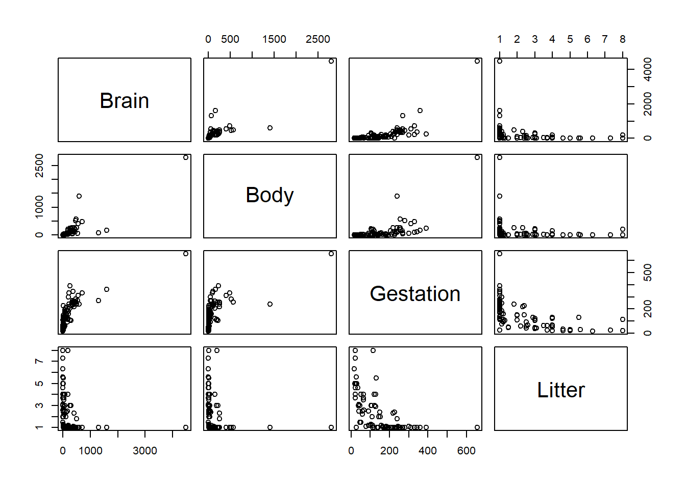
In this plot command, we select variables from brain in the columns argument with the response Brain listed last to make the lower row of the plot show the response Brain on the y-axis vs. all three predictors on the x-axes.
Conclusion: transformations are likely needed. Since all variables have positive values, we can try logs first.
We can’t use a scale argument in a scatterplot matrix to explore transformations. Instead, we can use the dplyr package to transform all variables (except Species) using the mutate_all function, then we plot using ggpairs again. Here we also added the ggpairs argument columnLabels to remind us what transformations were made:
> library(dplyr)
> brain %>% select(-Species) %>% # omit species
+ mutate_all(.funs = log) %>% # apply the log function to all variables
+ ggpairs(columns = c("Body","Gestation", "Litter","Brain"),
+ lower = list(continuous = "smooth"),
+ columnLabels = c("log(Body)","log(Gestation)", "log(Litter)","log(Brain)"))
Does Litter need to be logged? If we don’t want to log all variables, we can use mutate_at instead of mutate_all:
> brain %>% select(-Species) %>% # omit species
+ mutate_at(.vars = c("Brain","Body","Gestation"), .funs = log) %>% # pick variables to log
+ ggpairs(columns = c("Body","Gestation", "Litter","Brain"),
+ lower = list(continuous = "smooth"),
+ columnLabels = c("log(Body)","log(Gestation)", "Litter","log(Brain)"))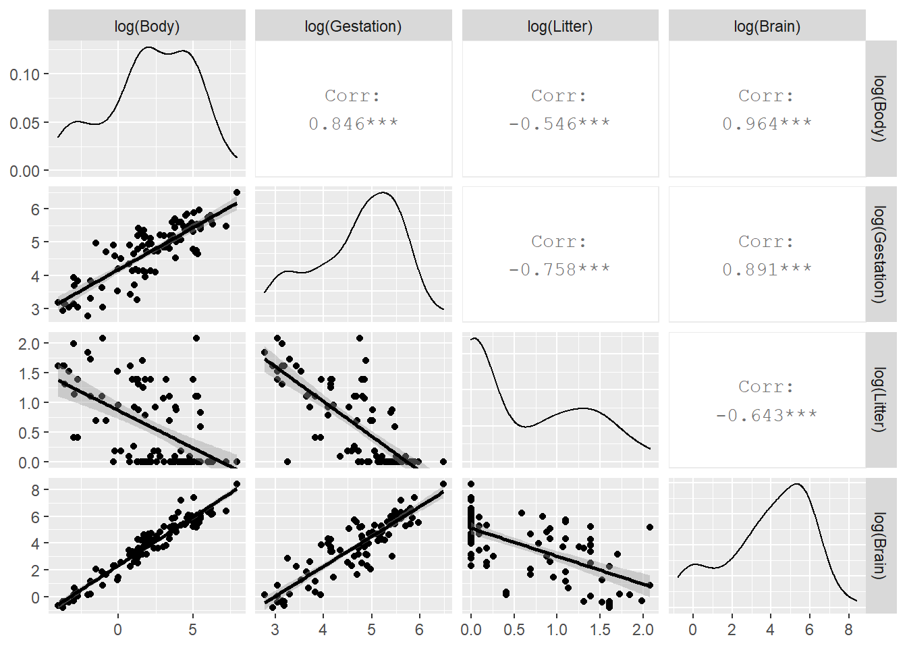
3.3.2.2 Jittered scatterplot:
Jittered plots are useful when data points overlap (discrete variables like litter) and your sample size isn’t huge. Change the alpha transparency value with large data sets. Here we compare geom_point() against geom_jitter, using grid.arrange from the gridExtra package to put these plots side-by-side:
> base <- ggplot(brain, aes(x=Litter, y=Brain)) + scale_y_log10()
> plotA <- base + geom_point() + labs(title="unjittered")
> plotB <- base + geom_jitter(width=.1) + labs(title="jittered")
> library(gridExtra)
> grid.arrange(plotA,plotB, nrow=1)
The width=.1 amount specifies how much to jitter the points (we changed it here because the default amount didn’t display enough of a change). We can see the jittering most in the points clustered around Litter=0.
3.3.3 Residual plots for MLR
If we have \(p\) predictors, then there are \(p+1\) residual plots to check:
- plot \(r_i\) against all predictors \(x_1, \dotsc, _p\). The motivation for these plots is the same as SLR (residuals should not be related to the \(x\)’s)
- plot \(r_i\) against the fitted values \(\hat{y}_i\). The motivation for this may be less clear, but the fitted values are simply a linear function of the predictor values: \[ \hat{y}_i = \hat{\beta}_0 + \hat{\beta}_1 x_{1,i} + \hat{\beta}_2 x_{2,i} + \dotsm + \hat{\beta}_p x_{p,i} \] so the residuals should not be related to the fitted values if the model fits.
All \(p+1\) plots should be checked. A quick starting point is the fitted value plot which is the first plot when plot-ing the lm. Here is the residuals vs. fitted plot for the untransformed variable model:
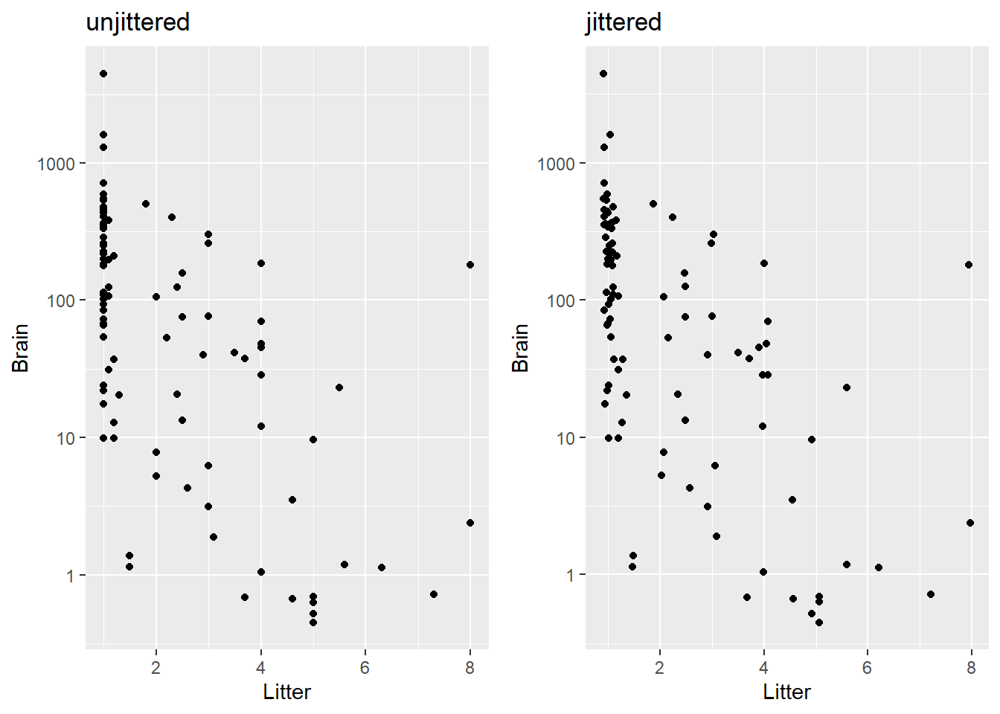
This plot indicates non-linearity and non-constant variance. Here is the same residual plot for the model will all variables logged except Litter:
> brain.lm2 <- lm(log(Brain) ~ log(Gestation) + log(Body) + Litter, data=brain)
> plot(brain.lm2, which=1)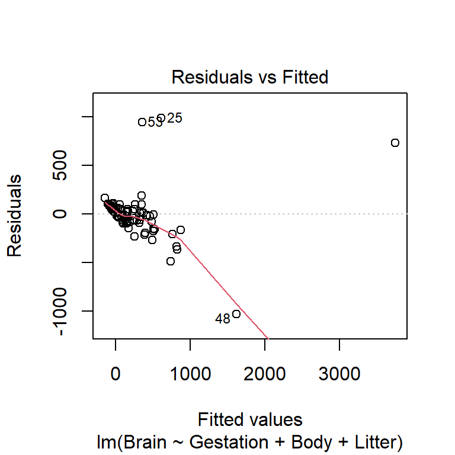
We can use the ggnostic function in GGally to get plots of residuals vs. all predictors:
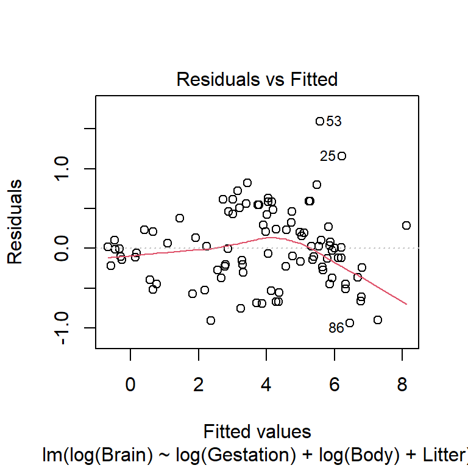
The residual plots reveal some outliers that should be explored but the overall fit, while not perfect, is much better than the untransformed version.
| term | estimate | std.error | statistic | p.value |
|---|---|---|---|---|
| (Intercept) | 0.8234 | 0.6621 | 1.2437 | 0.2168 |
| log(Gestation) | 0.4396 | 0.1370 | 3.2095 | 0.0018 |
| log(Body) | 0.5745 | 0.0326 | 17.6009 | 0.0000 |
| Litter | -0.1104 | 0.0423 | -2.6115 | 0.0105 |
The estimated median function for this model is \[ \widehat{median}(y \mid x) = e^{0.8234}(Gest)^{0.4396}(Body)^{0.5745}e^{-0.1104(Litter)} \]
The effect of Gestation is interpreted as you would in a power model (both variables logged). For example, doubling gestational days is associated with an estimated $(2^{0.4396}-1)100%=$35.6% increase in median brain weight, holding body weight and litter size constant.
The effect of Litter is interpreted as you would in an exponential model (with just the response logged). For example, after controlling for body size and gestation time, each additional offspring decreases estimated median brain weight by 10.5% (work is \((e^{-0.1104}-1)100%=\)).
3.3.4 EDA for interactions
We visualize interactions by using a graphic that looks at the relationship between \(y\) and \(x_1\) while holding the value of \(x_2\) fixed (or almost fixed), and vice versa for flipping the role of \(x\) variables. An interaction may be needed if the relationship between \(y\) and \(x_1\) depends on the value of \(x_2\).
3.3.4.1 Predictors: one quantitative and one categorical
For example, if \(x_1\) is quantitative and \(x_2\) is categorical, then we use facet_wrap (or facet_grid) to split the scatterplot of \(y\) vs. \(x_1\) by group of \(x_2\):
3.3.4.2 Predictors: both quantitative
We use the same facet_wrap function, but we need to group the data into similar cases with respect to their \(x_2\) value, which is now assumed to be quantitative. One way to do this is to use the ntile(n=) function from dplyr package where n determines how many groups the data will be divided into.
Is there an interaction between body weight and gestation?? Does the relationship between brain weight and gestation length change as we vary body weight? If yes, then we should include an interaction term between gestation and body weight.
Here we hold body weight “fixed” by using the ntile command from the dplyr package to divide the data into chunks of animals with similar body weights. Here we pick n=4 for this function which divides the cases into 4 equal sized chunks based on the quartiles (4) of Body. In the plot below the cases in “1” are the lower 25% of body weights, “2” are the 25-50th percentile values of Body weights, etc.
> ggplot(brain, aes(x=Gestation, y=Brain)) +
+ geom_point() + geom_smooth(method="lm", se=FALSE) +
+ scale_x_log10() + scale_y_log10() +
+ facet_wrap(~ ntile(Body, n=4))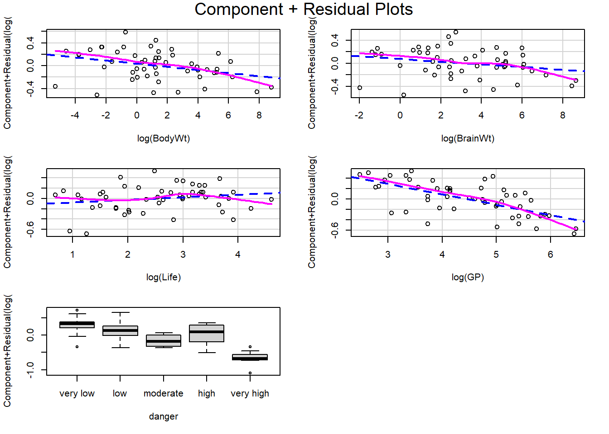
Conclusion: the trend within each level of body weight is about the same. No obvious interactive effect of body weight and gestation length on brain weight. Of course we can always check significance by adding interaction term to model:
> brain.lm3 <- lm(log(Brain) ~ log(Gestation) + log(Body) + Litter + log(Gestation):log(Body), data=brain)
> summary(brain.lm3)
##
## Call:
## lm(formula = log(Brain) ~ log(Gestation) + log(Body) + Litter +
## log(Gestation):log(Body), data = brain)
##
## Residuals:
## Min 1Q Median 3Q Max
## -0.95837 -0.29354 0.01594 0.27960 1.62013
##
## Coefficients:
## Estimate Std. Error t value Pr(>|t|)
## (Intercept) 0.64124 0.67137 0.955 0.342050
## log(Gestation) 0.48758 0.14051 3.470 0.000797 ***
## log(Body) 0.69602 0.09268 7.510 3.91e-11 ***
## Litter -0.10050 0.04264 -2.357 0.020566 *
## log(Gestation):log(Body) -0.02678 0.01914 -1.399 0.165080
## ---
## Signif. codes: 0 '***' 0.001 '**' 0.01 '*' 0.05 '.' 0.1 ' ' 1
##
## Residual standard error: 0.4731 on 91 degrees of freedom
## Multiple R-squared: 0.9545, Adjusted R-squared: 0.9525
## F-statistic: 477.4 on 4 and 91 DF, p-value: < 2.2e-163.3.5 Quadratic models: Corn yields (exercise 9.15)
This final example illustrates a quadratic model fit and scatterplot. Consider the corn yield data in textbook exercise 9.15. How is corn yield (measured bushels/acre) in a year related to the amount of rainfall (inches) in that summer?
A linear model for yield against rainfall is not appropriate:
> corn <- ex0915
> summary(corn)
## Year Yield Rainfall
## Min. :1890 Min. :19.40 Min. : 6.800
## 1st Qu.:1899 1st Qu.:29.95 1st Qu.: 9.425
## Median :1908 Median :32.15 Median :10.500
## Mean :1908 Mean :31.92 Mean :10.784
## 3rd Qu.:1918 3rd Qu.:35.20 3rd Qu.:12.075
## Max. :1927 Max. :38.30 Max. :16.500
> ggplot(corn, aes(x=Rainfall, y=Yield)) +
+ geom_point() +
+ geom_smooth(method="lm", se=FALSE) +
+ labs(title="SLR model")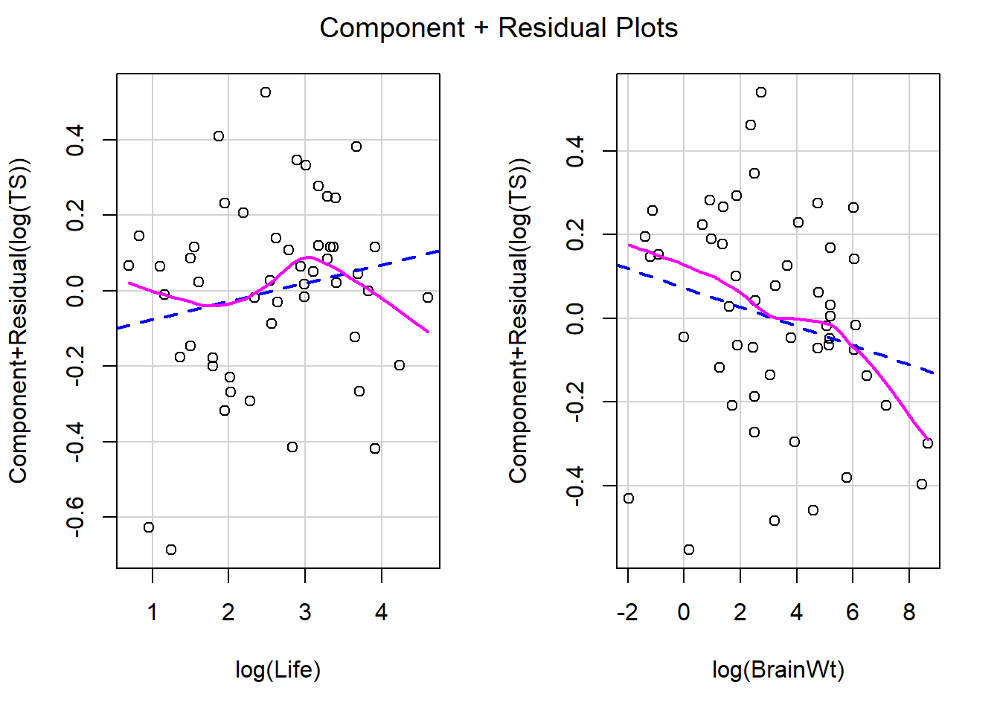
We can add a quadratic term (using the I() operator):
Alternatively, we can update model 1 (SLR) using the update command: on right side of formula the ~ . + newstuff says to add the newstuff to the old model formula which is denoted with the period . .
> corn.lm2 <- update(corn.lm1, ~ . + I(Rainfall^2))
> summary(corn.lm2)
##
## Call:
## lm(formula = Yield ~ Rainfall + I(Rainfall^2), data = corn)
##
## Residuals:
## Min 1Q Median 3Q Max
## -8.4642 -2.3236 -0.1265 3.5151 7.1597
##
## Coefficients:
## Estimate Std. Error t value Pr(>|t|)
## (Intercept) -5.01467 11.44158 -0.438 0.66387
## Rainfall 6.00428 2.03895 2.945 0.00571 **
## I(Rainfall^2) -0.22936 0.08864 -2.588 0.01397 *
## ---
## Signif. codes: 0 '***' 0.001 '**' 0.01 '*' 0.05 '.' 0.1 ' ' 1
##
## Residual standard error: 3.763 on 35 degrees of freedom
## Multiple R-squared: 0.2967, Adjusted R-squared: 0.2565
## F-statistic: 7.382 on 2 and 35 DF, p-value: 0.002115
> plot(corn.lm2, which=1)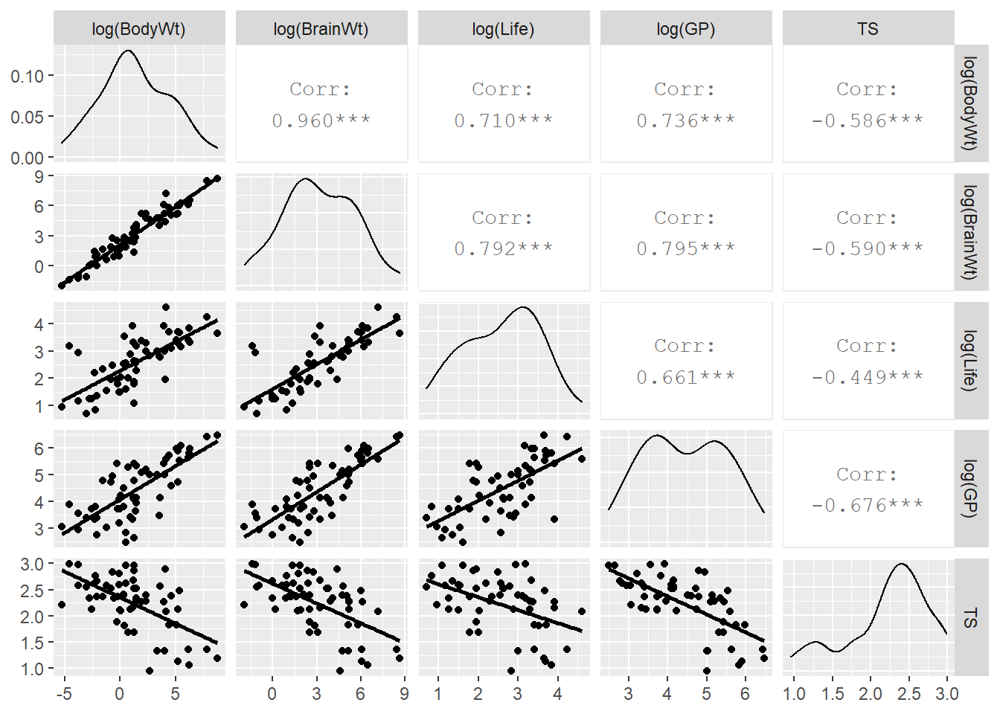
This residual plot looks much better for this quadratic model compared to the linear model.
We can visualize this quadratic model using the geom_smooth(method="lm") function but we have to specify this model form since the default is a SLR. This is done in the formula argument, using y and x to denote the x and y that you specify in the aes argument.
> ggplot(corn, aes(x=Rainfall, y=Yield)) +
+ geom_point() +
+ geom_smooth(method="lm", formula= y ~ x + I(x^2), se=FALSE) +
+ labs(title="quadratic fit!")The model fit is
| term | estimate | std.error | statistic | p.value |
|---|---|---|---|---|
| (Intercept) | -5.0147 | 11.4416 | -0.4383 | 0.6639 |
| Rainfall | 6.0043 | 2.0389 | 2.9448 | 0.0057 |
| I(Rainfall^2) | -0.2294 | 0.0886 | -2.5877 | 0.0140 |
so \[ \hat{\mu}(yield \mid rain) = -5.0147 + 6.0043(rain)- 0.2294(rain)^2 \] An increase from 9 to 10 inches of rainfall is associated with a mean yield increase of 1.646 bushels per acre. \[ 6.0043- 0.2294(2\times 9 + 1) = 1.646 \] An increase from 14 to 15 inches of rainfall is associated with a mean yield decrease of 0.648 bushels per acre. \[ 6.0043- 0.2294(2\times 14 + 1) = -0.648 \]
3.4 Categorical Predictors
Categorical predictors can be included in a regression model the same way that a quantitative predictor can. But since a categorical variable doesn’t have a numerical scaling, we don’t have a “linearity” assumption that needs to be met (though the three other assumptions still hold). A categorical variable is included by using one or more indicator variables (aka dummy variables) which indicate different levels of the variable.
- An indicator variable equals 1 to indicate the level of interest, and is 0 otherwise.
- The baseline level of an indicator variable is the level of the factor variable that doesn’t have an indicator variable made for it.
- R will create indicator variables for us in an
lm, so there is no need to do this “by hand”.
If a variable, which is stored as a factor in R, has \(k\) levels then we need \(k-1\) indicator variables. Consider the following examples to illustrate this idea.
Suppose we are looking at how gender and education level are associated with income. If there are two genders in our data, here recorded as Female and Male, then we need one indicator to indicate one of the two levels. R will create an indicator for the second level, ordered alphabetically. If a case has Indicator_Male=1 then the case is Male but if the case has Indicator_Male=0 then the case is Female. So this one indicator variable can classify two levels and the baseline level is Female.
| Gender | Indicator_Male |
|---|---|
| Female | 0 |
| Male | 1 |
Suppose we are looking at how number of farms per county in 1992 is related to number of farms in 1987 and region of the country. If there are four regions in our data, here recorded as NC, NE, S and W, then we need three indicators. R will create an indicator for all but the first level of NC. If a case has Indicator_NE=1 then the case is NE, if the case has Indicator_S=1 then the case is S, if the case has Indicator_W=1 then the case is W. If a case has all indicator values equal to 0, then the case is the baseline level of NC. So we need three indicators to classify the four region levels.
| Region | Indicator_NE | Indicator_S | Indicator_W |
|---|---|---|---|
| NC | 0 | 0 | 0 |
| NE | 1 | 0 | 0 |
| S | 0 | 1 | 0 |
| W | 0 | 0 | 1 |
3.4.1 Interpretation: adding a categorical
You add a categorical predictor x2 to the lm function just as you would any quantitative predictor: lm(y ~ x1 + x2, data). R automatically creates indicator variables for x2. When adding a categorical x2 which has, say levels A, B and C, the basic mean function form looks like:
\[
\mu(Y \mid x_1, x_2) = \beta_0 + \beta_1 x_1 + \beta_3 LevelB + \beta_4 LevelC
\]
The mean function for cases where \(x_2=A\) sets the indicators for levels B and C equal to 0:
\[
\mu(Y \mid x_1, x_2=A) = \beta_0 + \beta_1 x_1 + \beta_3 (0) + \beta_4 (0) = \beta_0 + \beta_1 x_1
\]
The mean function for cases where \(x_2=B\) sets the indicator for level B equalt to 1 and the indicator for level C equal to 0:
\[
\mu(Y \mid x_1, x_2=B) = \beta_0 + \beta_1 x_1 + \beta_3 (1) + \beta_4 (0) = \beta_0 + \beta_1 x_1 + \beta_3
\]
The mean function for cases where \(x_2=C\) sets the indicator for level C equalt to 1 and the indicator for level B equal to 0:
\[
\mu(Y \mid x_1, x_2=C) = \beta_0 + \beta_1 x_1 + \beta_3 (0) + \beta_4 (1) = \beta_0 + \beta_1 x_1 + \beta_4
\]
Interpretation of indicator effects:
- \(\beta_3\) is the difference between \(\mu(Y \mid x_1, x_2=B)\) and \(\mu(Y \mid x_1, x_2=A)\), so it measures the mean change between levels
BandA, holding \(x_1\) fixed. - \(\beta_4\) is the difference between \(\mu(Y \mid x_1, x_2=C)\) and \(\mu(Y \mid x_1, x_2=A)\), so it measures the mean change between levels
CandA, holding \(x_1\) fixed. - \(\beta_3-\beta_4\) is the difference between \(\mu(Y \mid x_1, x_2=B)\) and \(\mu(Y \mid x_1, x_2=C)\), so it measures the mean change between levels
BandC, holding \(x_1\) fixed.
3.4.1.1 Example: Agstrat
Consider the agstrat data again, fitting the regression of square root of farms92 (number of farms/county in 1992) against square root of farms87 and region.
> agstrat<- read.csv("http://people.carleton.edu/~kstclair/data/agstrat.csv")
> farms.lm <- lm(sqrt(farms92) ~ sqrt(farms87) + region, data=agstrat)
> farms.lm
##
## Call:
## lm(formula = sqrt(farms92) ~ sqrt(farms87) + region, data = agstrat)
##
## Coefficients:
## (Intercept) sqrt(farms87) regionNE regionS regionW
## -0.9369 0.9798 -0.0826 0.7214 1.0100The fitted model mean function is estimated as \[ \begin{split} \hat{\mu}(\sqrt{farms92} \mid \sqrt{farms92}, region) & = -0.9369 + 0.9798 \sqrt{farms92} -0.0826(regionNE) + \\ & 0.7214(regionS) + 1.0100(regionW) \end{split} \]
For the baseline NC region, the estimated mean function is
\[\begin{split}
\hat{\mu}(\sqrt{farms92} \mid \sqrt{farms92}, region=NC) & = -0.9369 + 0.9798 \sqrt{farms92} -0.0826(0) + \\
& 0.7214(0)+ 1.0100(0) \\
& = -0.9369 + 0.9798 \sqrt{farms92}
\end{split}
\]
For the S region, the estimated mean function is
\[\begin{split}
\hat{\mu}(\sqrt{farms92} \mid \sqrt{farms92}, region=S) & = -0.9369 + 0.9798 \sqrt{farms92} -0.0826(0) + \\
& 0.7214(1)+ 1.0100(0)\\
& = -0.9369 + 0.9798 \sqrt{farms92}+ 0.7214 \\
& = -0.2155+ 0.9798 \sqrt{farms92}
\end{split}
\]
Interpretation \(\hat{\beta}_3 = 0.7214\) tells us that the mean square root farms92 is estimated to be 0.7214 units higher in the S compared to the NC region, holding farms87 constant. But the effect of farms87 is the same, regardless of region: holding region constant, a one unit increase in the square root of farms87 is associated with a 0.9798 unit increase in the mean square root of farms92.
With one quatitative preditor and one categorical predictor, we can visual this data by coloring plot symbols by region. We can also add parallel lines that show how farms87 is related to farms92 in each region. We do this by adding the model’s fitted values (\(\hat{y}\)’s) to the augmented data frame and plotting lines, by region, with these fitted values as the y-axis measurement.
> library(ggplot2)
> library(broom)
> agstrat.aug <- augment(farms.lm)
> head(agstrat.aug)
## # A tibble: 6 x 10
## sqrt.farms92. sqrt.farms87. region .fitted .se.fit .resid .hat .sigma
## <dbl> <dbl> <fct> <dbl> <dbl> <dbl> <dbl> <dbl>
## 1 26.9 29.3 NC 27.7 0.0895 -0.821 0.00977 0.906
## 2 25.7 25.9 NC 24.4 0.0902 1.21 0.00992 0.905
## 3 39.8 41.6 NC 39.9 0.121 -0.0895 0.0178 0.907
## 4 34.1 35.7 NC 34.1 0.100 0.0269 0.0123 0.907
## 5 21.2 22.0 NC 20.6 0.0965 0.569 0.0113 0.907
## 6 24.1 26.4 NC 25.0 0.0898 -0.823 0.00983 0.906
## # ... with 2 more variables: .cooksd <dbl>, .std.resid <dbl>
> ggplot(agstrat.aug, aes(x=sqrt.farms87., y=sqrt.farms92., color=region)) +
+ geom_point() +
+ geom_line(data=agstrat.aug, aes(y=.fitted), size=1) +
+ labs(title="Parallel line model",
+ x="square root of number of farms in 1987",
+ y="square root of number of farms in 1992")The difference of \(\hat{\beta}_3 = 0.7214\) is shown by the fact that the blue South line is always 0.7214 units above the red North Central line for any value of farms87. The small value of \(\hat{\beta}_2 = -0.0826\) for the NE indicator show that there is basically no difference between the NE and NC lines, which can be seen by the almost overlapping red and green lines.
3.4.2 Interpretation: adding a categorical interaction
What if we thought that the effect of \(x_1\) depends on the level of the categorical variable \(x_2\). E.g. What if the slopes for each region in the above scatterplot were allowed different? To create a separate lines model we would add the interaction of \(x_1\) and \(x_2\): lm(y ~ x1 * x2, data). When adding a categorical x2 which has, say levels A, B and C, the basic mean function form looks like:
\[
\mu(Y \mid x_1, x_2) = \beta_0 + \beta_1 x_1 + \beta_3 LevelB + \beta_4 LevelC + \beta_5 x_1LevelB + \beta_6 x_1LevelC
\]
The mean function for cases where \(x_2=A\) sets the indicators for levels B and C equal to 0:
\[
\mu(Y \mid x_1, x_2=A) = \beta_0 + \beta_1 x_1 + \beta_3 (0) + \beta_4 (0) = \beta_0 + \beta_1 x_1 + \beta_5 x_1(0) + \beta_6 x_1(0) = \beta_0 + \beta_1 x_1
\]
The mean function for cases where \(x_2=B\) sets the indicator for level B equalt to 1 and the indicator for level C equal to 0:
\[
\mu(Y \mid x_1, x_2=B) = \beta_0 + \beta_1 x_1 + \beta_3 (1) + \beta_4 (0) + \beta_5 x_1(1) + \beta_6 x_1(0) = (\beta_0+ \beta_3) + (\beta_1+\beta_5) x_1
\]
The mean function for cases where \(x_2=C\) sets the indicator for level C equalt to 1 and the indicator for level B equal to 0:
\[
\mu(Y \mid x_1, x_2=C) = \beta_0 + \beta_1 x_1 + \beta_3 (0) + \beta_4 (1) + \beta_5 x_1(0) + \beta_6 x_1(1)= (\beta_0+ \beta_4) + (\beta_1+\beta_6) x_1
\]
Interpretation of indicator effects:
- \(\beta_3\) is the difference between \(\mu(Y \mid x_1=0, x_2=B)\) and \(\mu(Y \mid x_1=0, x_2=A)\) at the intercept where \(x_1=0\).
- \(\beta_4\) is the difference between \(\mu(Y \mid x_1=0, x_2=C)\) and \(\mu(Y \mid x_1=0, x_2=A)\) at the intercept where \(x_1=0\).
- \(\beta_1\) is the effect of \(x_1\) when \(x_2 = A\) (level A)
- \(\beta_1+\beta_5\) is the effect of \(x_1\) when \(x_2 = B\) (level B)
- \(\beta_5\) measures how much more or less the effect of \(x_1\) is in level B compared to level A (difference in slopes of the two lines)
- \(\beta_1+\beta_6\) is the effect of \(x_1\) when \(x_2 = C\) (level C)
- \(\beta_6\) measures how much more or less the effect of \(x_1\) is in level C compared to level A (difference in slopes of the two lines)
3.4.2.1 Example: Sleep
This data sleep contains information on the sleep and physical characteristics of 62 species of mammals. Our goal is to see how the total amount of sleep (hours) that an animal gets in 24 hours is related to its body weight (kg) and the amount of danger (low danger to high danger) to which it is exposed.
> sleep <- read.csv("http://math.carleton.edu/kstclair/data/sleep.csv")
> sleep %>% select(TS, BodyWt, D) %>% summary()
## TS BodyWt D
## Min. : 2.60 Min. : 0.005 Min. :1.000
## 1st Qu.: 8.05 1st Qu.: 0.600 1st Qu.:1.000
## Median :10.45 Median : 3.342 Median :2.000
## Mean :10.53 Mean : 198.790 Mean :2.613
## 3rd Qu.:13.20 3rd Qu.: 48.203 3rd Qu.:4.000
## Max. :19.90 Max. :6654.000 Max. :5.000
## NA's :4Our EDA above shows that danger levelD is numerically coded, with a “1” indicating very low danger level up to “5” indicating very high danger. If we used this version in our model that forces a linear relationship, which means a constant change in TS for each bump up in danger level, which is a strong assumption to make given the categorical nature of this variable. Plus, this constant rate of change does not look to be the case based on EDA:
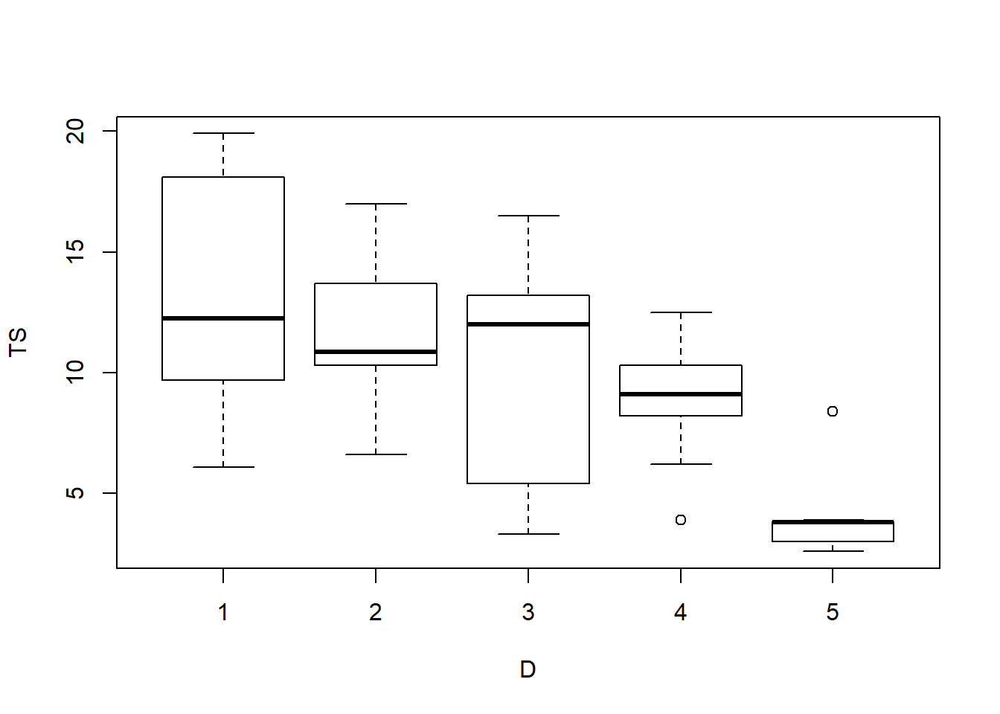
We must make a factor version of this variable to correctly use it in our model. We will use the fct_recode command from the forcats package:
> table(sleep$D) # EDA counts for each level
##
## 1 2 3 4 5
## 19 14 10 10 9
> library(forcats)
> sleep$danger <- fct_recode(factor(sleep$D),
+ "very low" = "1",
+ "low" = "2",
+ "moderate" = "3",
+ "high" = "4",
+ "very high" = "5")
> table(sleep$danger) # check that we recoded correctly
##
## very low low moderate high very high
## 19 14 10 10 9
> levels(sleep$danger) # very low is the first=baseline level
## [1] "very low" "low" "moderate" "high" "very high"Always do an EDA check (here, checking counts) when manipulating or recoding a variable. Our factor variable danger’s first level is very low which will be the baseline level for any model fit in R.
When we add lm lines to a scatterplot with color coded points, then ggplot will fit separate lines for each color. Here we plot TS (total sleep) against the logged version of BodyWt since we don’t have a linear relationship on the untransformed scale.
> library(ggplot2)
> ggplot(sleep, aes(x=BodyWt, y=TS, color=danger)) +
+ geom_point() +
+ geom_smooth(method="lm", se=FALSE) +
+ scale_x_log10() +
+ labs(title="daily sleep vs. body weight by danger level")
This plot suggests that there may be an interaction between danger and BodyWt since the lm lines have some variation in slope across danger levels. The model we will fit has ten parameters ($_0-_9) due to the four indicator variables that are also interacted with body weight:
\[\begin{split} \mu(TS \mid body, danger) &= \beta_0 + \beta_1 \log(body) + \beta_2 low + \beta_3 moderate + \beta_4 high + \\ & \beta_5 veryhigh + \beta_6 \log(body)low + \beta_7 \log(body)moderate + \\ & \beta_8 \log(body)high + \beta_9 \log(body)veryhigh \end{split} \]
> sleep.lm <- lm(TS ~ log(BodyWt)*danger, data=sleep)
> sleep.lm
##
## Call:
## lm(formula = TS ~ log(BodyWt) * danger, data = sleep)
##
## Coefficients:
## (Intercept) log(BodyWt)
## 13.86818 -0.58104
## dangerlow dangermoderate
## -2.35924 -3.50087
## dangerhigh dangervery high
## -4.22738 -7.03108
## log(BodyWt):dangerlow log(BodyWt):dangermoderate
## -0.03446 -0.34437
## log(BodyWt):dangerhigh log(BodyWt):dangervery high
## 0.16966 -0.09638The estimated mean function is \[\begin{split} \mu(TS \mid body, danger) &= 13.868 -0.581 \log(body)-2.359 low -3.501 moderate -4.227 high - \\ & 7.031 veryhigh -0.034 \log(body)low -0.344\log(body)moderate + \\ & 0.170 \log(body)high -0.096 \log(body)veryhigh \end{split} \]
There are many parameters to interpret, so here are a few examples:
\(\beta_1\) is the effect of body weight for species in the “very low” danger level. To see this, write out the mean functions for the two levels. For very low level: \[\begin{split} \mu(TS \mid body, danger=verylow) &= \beta_0 + \beta_1 \log(body) + \beta_2 (0) + \beta_3 (0) + \beta_4 (0) + \beta_5 (0) \\ & + \beta_6 \log(body)(0) + \beta_7 \log(body)(0) + \beta_8 \log(body)(0) + \beta_9 \log(body)(0) \\ & = \beta_0 + \beta_1 \log(body) \end{split}\]
\(\beta_9\) tells us how the effect of body weight differs for the very low and very high danger levels. Compare the mean response for very low to the mean response for the very high level: \[\begin{split} \mu(TS \mid body, danger=veryhigh) &= \beta_0 + \beta_1 \log(body) + \beta_2 (0) + \beta_3 (0) + \beta_4 (0) + \beta_5 (1) \\ & + \beta_6 \log(body)(0) + \beta_7 \log(body)(0) + \beta_8 \log(body)(0) + \beta_9 \log(body)(1) \\ & = (\beta_0 + \beta_5) + (\beta_1 + \beta_9) \log(body) \end{split}\] In the “very low” model, \(\beta_1\) measures the effect of body weight on mean sleep while in the “very high” model, \(\beta_1 + \beta_9\) measures this effect. So the parameter \(\beta_9\) tells us how this effect differs for the two danger levels. The small estimated value \(\hat{\beta}_9 = -0.096\), along with the separate lines scatterplot, suggest little difference in the effect of body weight in these two danger groups.
The parameter function \(\beta_5 + \beta_9 \log(body)\) tells us the difference in total sleep between the very high and very low danger levels at a given value of body weight. Recall that in this interaction model, the effect of danger should depend on the value of body weight. For example, for animals that are 1kg in weight, the parameter \(\beta_5 + \beta_9\log(1) = \beta_5\) measures the difference in mean total sleep for the very high and very low levels. The estimated parameter value of \(\hat{\beta}_5 = -7.031\) and the large difference shown in the scatterplot suggest that for 1 kg animals, that the average total sleep for animals with very high danger is about 7 hours less than for animals in very low danger.
To determine if the effect of body weight on mean total sleep differs for “high” and “moderate” levels of danger, we would test the hypotheses \[ H_0: \beta_8 = \beta_7 \ \ \ \ vs. \ \ \ \ H_A: \beta_8 \neq \beta_7 \] Again, write down the mean equations for these two levels. For “high” all dummy variables equal 0 expect
highequals 1: \[\begin{split} \mu(TS \mid body, danger=high) &= \beta_0 + \beta_1 \log(body) + \beta_2 (0) + \beta_3 (0) + \beta_4 (1) + \beta_5 (0) \\ & + \beta_6 \log(body)(0) + \beta_7 \log(body)(0) + \beta_8 \log(body)(1) + \beta_9 \log(body)(0) \\ & = (\beta_0 + \beta_4) + (\beta_1 + \beta_8) \log(body) \end{split} \] for “moderate” all dummy variables equal 0 expectmoderateequals 1. \[\begin{split} \mu(TS \mid body, danger=moderate) &= \beta_0 + \beta_1 \log(body) + \beta_2 (0) + \beta_3 (1) + \beta_4 (0) + \beta_5 (0) \\ & + \beta_6 \log(body)(0) + \beta_7 \log(body)(1) + \beta_8 \log(body)(0) + \beta_9 \log(body)(0) \\ & = (\beta_0 + \beta_3) + (\beta_1 + \beta_7) \log(body) \end{split}\] In the “high” model, \(\beta_1 + \beta_8\) measures the effect of body weight on mean sleep while in the “moderate” model, \(\beta_1 + \beta_7\) measures this effect. Our null hypothesis would state that these two effects are equal: \[ H_0: \beta_1 + \beta_8 = \beta_1 + \beta_7 \] which simplifies to the hypothesis given above.
3.5 Inference for MLR
Inference methods for individual \(\beta\)-parameters, the mean function \(\mu\) and predictions are all very similar to the inference methods outlined for SLR models in Sections 2.5 and 2.6. The biggest difference is that we now use a t-distribution with degrees of freedom equal to \(\pmb{n-(p+1)}\) where \(p+1\) is equal to the number of \(\beta\)’s in the mean function.
To review:
Confidence Intervals for \(\pmb{\beta}_i\): A \(C\)% confidence for \(\beta_i\) has the form: \[ \hat{\beta}_i \pm t^* SE(\hat{\beta}_i) \] where \(t^*\) is the \((100-C)/2\) percentile from the t-distribution with \(df=n-(p+1)\) degrees of freedom.
Hypothesis tests We can test the hypothesis \[ H_0: \beta_i = 0 \ \ \ \ vs. \ \ \ \ H_A: \beta_i \neq 0 \] with the following t-test statistic: \[ t =\dfrac{\hat{\beta}_i - 0}{SE(\hat{\beta}_i)} \] The t-distribution with \(n-(p+1)\) degrees of freedom is used to compute the p-value that is appropriate for whatever \(H_A\) is specified. Interpretation of results: Recall the general interpretation for the planar model: \(\beta_i\) is the effect of a one unit increase in \(x_i\), holding all other predictors constant. Testing \(\pmb{\beta}_i =0\) is the same as asking: Is the observed effect of \(x_i\) on \(\mu\) statistically significant after accounting for all other terms in the model? For this reason, an individual t-test is only good for determing if \(x_i\) is needed in a model that contains all other terms. If you want to test the significance of multiple predictors at once, you need to conduct an F-test using ANOVA (Section 3.6.
Inference for \(\pmb{\mu(Y \mid X_0)}\) and \(\pmb{pred(Y \mid X_0)}\): Confidence and prediction intervals calculations are very similar to SLR in Section 3.5.1, except for the change in the degrees of freedom and a slightly more complex form for the SE of the estimated mean response \(SE(\hat{\mu}(Y \mid X_0))\) which now involves more than one predictor.
3.5.1 Inference for a linear combination of \(\beta\)’s
One new inference method which is sometimes needed in MLR models, is to make inferences about a linear combination of \(\beta_i\)’s. A linear combination is of the form: \[ \gamma = c_i \beta_i + c_j \beta_j \] where \(c_i\) and \(c_j\) are known numbers.
Some examples of a linear combination include:
Suppose we fit the quadratic model in Section 3.2.1.2 and want to estimate the change in the mean response for a change in \(x_1\) from 9 to 10. This change is measured by the parameter \[ \gamma = \beta_1 + \beta_2(2\times 9+1) = \beta_1 + 19\beta_2 \] so \(c_1 = 1\) and \(c_2 = 19\).
Suppose we fit the interaction model in Section 3.2.1.3 and want to estimate the change in the mean response for a 1 unit increase in \(x_1\), holding \(x_2\) constant at the value of -5. This change is measured by the parameter \[ \gamma = \beta_1 + \beta_3 (-5) = \beta_1 -5 \beta_3 \] so \(c_1 = 1\) and \(c_3 = -5\).
Any inference for this new \(\gamma\) parameter will rely on an estimate, \(\hat{\gamma}\) and standard error \(SE(\hat{\gamma})\).
- Estimation: Just plug in our \(\beta\) estimates! \[ \hat{\gamma} = c_i \hat{\beta}_i + c_j \hat{\beta}_j \]
- SE: This is more complex of a calculation because the estimates \(\hat{\beta}_i\) and \(\hat{\beta}_i\) are correlated. We can see this for \(\hat{\beta}_0\) and \(\hat{\beta}_1\) in the SLR simulation in Section 2.4.4. We use probabilities rules for the linear combination of two correlated random variables to derive our SE as \[ SE(\hat{\gamma}) = \sqrt{c^2_i Var(\hat{\beta}_i) + c^2_j Var(\hat{\beta}_j) + 2c_i c_j Cov(\hat{\beta}_i, \hat{\beta}_j) } \] The variances (\(Var\)) values are the squared SE’s for each estimate, e.g. \(Var(\hat{\beta}_i) = SE(\hat{\beta}_i)^2\). The covariance (\(Cov\)) value measures how the two estiamtes co-vary together over many, many samples from the populations (just like SE tells us how each estimate varies by itself). Positive values of covariance means the two estimates are positively correlated, negative means negatively correlated. The magnitude of the covariance is a function of each estimate’s SE. In R, we will get these variance and covariance values from a MLR model’s estimated covariance matrix, which for a MLR planar model with two predictors will look like a 3x3 matrix with variance values on the diagonal and covariance values on the off-diagonals: \[ \begin{pmatrix} Var(\hat{\beta}_0) & Cov(\hat{\beta}_0, \hat{\beta}_1) & Cov(\hat{\beta}_0, \hat{\beta}_2) \\ Cov(\hat{\beta}_1, \hat{\beta}_0) & Var(\hat{\beta}_1)& Cov(\hat{\beta}_1, \hat{\beta}_2) \\ Cov(\hat{\beta}_2, \hat{\beta}_0)& Cov(\hat{\beta}_2, \hat{\beta}_1)& Var(\hat{\beta}_2) \end{pmatrix} \] Note that covariance is symmetric so that \(Cov(\hat{\beta}_i, \hat{\beta}_j) = Cov(\hat{\beta}_j, \hat{\beta}_i)\).
Inference for \(\gamma\) then looks like:
- Confidence interval for \(\pmb{\gamma}\): \(\hat{\gamma} \pm t^*_{df} SE(\hat{\gamma})\)
- Hypothesis test for \(\pmb{H_0: \gamma = \gamma^*}\): uses the test statistic \[ t = \dfrac{\hat{\gamma} - \gamma^*}{SE(\hat{\gamma})} \] and a p-value from a t-distribution with model degrees of freedom.
3.5.2 Example: Agstrat
Let’s continue with inference for the parallel lines model for modeling the number of farms in 1992 as a function of region and number of farms in 1987 (Section 3.4.1.1). The mean model form is
\[ \begin{split} \mu(\sqrt{farms92} \mid \sqrt{farms92}, region) & = \beta_0 + \beta_1 \sqrt{farms92} + \beta_2(regionNE) + \\ & \beta_3(regionS) + \beta_4(regionW) \end{split} \]
> agstrat<- read.csv("http://people.carleton.edu/~kstclair/data/agstrat.csv")
> farms.lm <- lm(sqrt(farms92) ~ sqrt(farms87) + region, data=agstrat)
> kable(tidy(farms.lm, conf.int=TRUE), digits = 3)| term | estimate | std.error | statistic | p.value | conf.low | conf.high |
|---|---|---|---|---|---|---|
| (Intercept) | -0.937 | 0.191 | -4.905 | 0.000 | -1.313 | -0.561 |
| sqrt(farms87) | 0.980 | 0.006 | 162.869 | 0.000 | 0.968 | 0.992 |
| regionNE | -0.083 | 0.219 | -0.377 | 0.706 | -0.514 | 0.349 |
| regionS | 0.721 | 0.123 | 5.884 | 0.000 | 0.480 | 0.963 |
| regionW | 1.010 | 0.170 | 5.933 | 0.000 | 0.675 | 1.345 |
Compare S to NC: \(\hat{\beta}_3 = 0.721\) tells us that the mean square root
farms92is estimated to be 0.721 units higher in theScompared to theNCregion, holdingfarms87constant. The t-test results in the summary output test \(H_0: \beta_3 = 0\), which has a t-test statistic of \(t = 0.721/0.123 = 5.884\) which gives a p-value that is less than 0.001. Interpretation: Holding all other model terms constant (including other indicators for W and NE), there is a statistically significant difference between the mean number of farms in 1992 between South and North Central regions for any given value of farms in 1987. I am 95% confident that the average square root of farms in 1992 is anywhere from 0.48 to 0.963 units higher in the south than in the north central regions, holding the number of farms in 1987 fixed.Compare NE to NC: \(\hat{\beta}_2 = -0.083\) tells us that the mean square root
farms92is estimated to be 0.083 units lower in theNEcompared to theNCregion, holdingfarms87constant. The t-test results in the summary output test \(H_0: \beta_2 = 0\), which has a t-test statistic of \(t = -0.377\) which gives a p-value that is 0.706. Interpretation: Holding all other model terms constant (including other indicators for S and W), there is no statistically significant difference between the mean number of farms in 1992 between Northeast and North Central regions for any given value of farms in 1987.Compare S to W: In the parallel line model, we would like to know if there is a difference in the mean number of farms in 1992 in the S and W regions, after controlling for the number of farms in 1987. The question can be answered by comparing \[ \mu(farms92 \mid farms87, region=S) - \mu(farms92 \mid farms87, region=W) = \beta_3 - \beta_4 \] The hypotheses are then \[ H_0: \beta_3 - \beta_4 = 0 \ \ vs. \ \ H_A: \beta_3 - \beta_4 \neq 0 \] Note that this is not the same as asking if each parameter equals 0. We just want to know if they are the same value, so we cannot use a t-test given in the summary output. This is a question about a linear combination of parameters: \[ \gamma = \beta_3 - \beta_4 \] where \(c_3 = 1\) and \(c_4 = -1\). Our estimated parameter difference is \[ \hat{\gamma} = \hat{\beta}_3 - \hat{\beta}_4 = 0.7214 - 1.0100 = -0.2886 \]
> farms.lm
##
## Call:
## lm(formula = sqrt(farms92) ~ sqrt(farms87) + region, data = agstrat)
##
## Coefficients:
## (Intercept) sqrt(farms87) regionNE regionS regionW
## -0.9369 0.9798 -0.0826 0.7214 1.0100
> # estimate of beta3 - beta4 (do S and W lines have same intercepts?)
> est <- 0.7214 - 1.0100
> est
## [1] -0.2886We use the vcov(my.lm) command to get the estimated model’s covariance matrix:
> vcov(farms.lm)
## (Intercept) sqrt(farms87) regionNE regionS
## (Intercept) 0.036481631 -1.015899e-03 -0.0132540419 -0.013273838
## sqrt(farms87) -0.001015899 3.619176e-05 0.0001884077 0.000189113
## regionNE -0.013254042 1.884077e-04 0.0480149402 0.008949944
## regionS -0.013273838 1.891130e-04 0.0089499443 0.015030978
## regionW -0.013332531 1.912040e-04 0.0089608296 0.008964555
## regionW
## (Intercept) -0.013332531
## sqrt(farms87) 0.000191204
## regionNE 0.008960830
## regionS 0.008964555
## regionW 0.028986383The parts we need are \(Var(\hat{\beta}_3) = 0.015030978\), \(Var(\hat{\beta}_4) = 0.028986383\), and \(Cov(\hat{\beta}_3, \hat{\beta}_4) = 0.008964555\). The SE of our estimated difference is then \[ SE(\hat{\gamma}) = \sqrt{(1)^20.015030978 + (-1)^20.028986383 + 2(1)(-1)0.008964555} = 0.1615186 \]
> # SE of this estimate
> se.est <- sqrt(0.015030978 + (-1)^2*0.028986383 + 2*(-1)*0.008964555)
> se.est
## [1] 0.1615186The test statistic is then \(t = (-0.2886 - 0)/0.1615186 = -1.786791\) which yields a 2-sided p-value of 0.075. This suggests that there is moderately weak evidence that there is a difference in means between the south and west, holding farms in 1987 fixed, but it is not statistically significant at the 5% level.
3.5.3 Example: Sleep
Let’s continue with inference for the separate lines model for modeling the amount of daily sleep for variety of animals as a function of their body size and danger level (Section 3.4.2.1). The interaction model looks liked \[\begin{split} \mu(TS \mid body, danger) &= \beta_0 + \beta_1 \log(body) + \beta_2 low + \beta_3 moderate + \beta_4 high + \\ & \beta_5 veryhigh + \beta_6 \log(body)low + \beta_7 \log(body)moderate + \\ & \beta_8 \log(body)high + \beta_9 \log(body)veryhigh \end{split} \]
The estimated model parameters from the model fit in Section 3.4.2.1 is
> summary(sleep.lm)
##
## Call:
## lm(formula = TS ~ log(BodyWt) * danger, data = sleep)
##
## Residuals:
## Min 1Q Median 3Q Max
## -7.5685 -2.0181 -0.2475 1.7083 6.6108
##
## Coefficients:
## Estimate Std. Error t value Pr(>|t|)
## (Intercept) 13.86818 0.89109 15.563 <2e-16 ***
## log(BodyWt) -0.58104 0.27659 -2.101 0.0409 *
## dangerlow -2.35924 1.30538 -1.807 0.0770 .
## dangermoderate -3.50087 1.40445 -2.493 0.0162 *
## dangerhigh -4.22738 1.58186 -2.672 0.0103 *
## dangervery high -7.03108 3.32910 -2.112 0.0399 *
## log(BodyWt):dangerlow -0.03446 0.72333 -0.048 0.9622
## log(BodyWt):dangermoderate -0.34437 0.42848 -0.804 0.4255
## log(BodyWt):dangerhigh 0.16966 0.41793 0.406 0.6866
## log(BodyWt):dangervery high -0.09638 0.76994 -0.125 0.9009
## ---
## Signif. codes: 0 '***' 0.001 '**' 0.01 '*' 0.05 '.' 0.1 ' ' 1
##
## Residual standard error: 3.432 on 48 degrees of freedom
## (4 observations deleted due to missingness)
## Multiple R-squared: 0.5326, Adjusted R-squared: 0.4449
## F-statistic: 6.076 on 9 and 48 DF, p-value: 1.177e-05
> kable(tidy(sleep.lm, conf.int = TRUE), digits = 3)| term | estimate | std.error | statistic | p.value | conf.low | conf.high |
|---|---|---|---|---|---|---|
| (Intercept) | 13.868 | 0.891 | 15.563 | 0.000 | 12.077 | 15.660 |
| log(BodyWt) | -0.581 | 0.277 | -2.101 | 0.041 | -1.137 | -0.025 |
| dangerlow | -2.359 | 1.305 | -1.807 | 0.077 | -4.984 | 0.265 |
| dangermoderate | -3.501 | 1.404 | -2.493 | 0.016 | -6.325 | -0.677 |
| dangerhigh | -4.227 | 1.582 | -2.672 | 0.010 | -7.408 | -1.047 |
| dangervery high | -7.031 | 3.329 | -2.112 | 0.040 | -13.725 | -0.337 |
| log(BodyWt):dangerlow | -0.034 | 0.723 | -0.048 | 0.962 | -1.489 | 1.420 |
| log(BodyWt):dangermoderate | -0.344 | 0.428 | -0.804 | 0.426 | -1.206 | 0.517 |
| log(BodyWt):dangerhigh | 0.170 | 0.418 | 0.406 | 0.687 | -0.671 | 1.010 |
| log(BodyWt):dangervery high | -0.096 | 0.770 | -0.125 | 0.901 | -1.644 | 1.452 |
Here are some inferences we can make:
- Body weight effect for very low danger: Recall from above that \(\beta_1\) is the effect of body weight for species in the “very low” danger level. The coefficients table above provide results for testing \(H_0: \beta_1 = 0\) vs. \(H_A: \beta_1 \neq 0\). The results of this test show that the effect of body weight is moderately significant for the very low danger subpopulation (t=-2.101, df=48, p=0.0409). A doubling of body weight for the low danger population is associated with a decrease in mean total sleep of anywhere from 0.02 to 0.80 hours.
> # logarithmic model : additive change in mean(y) = beta*log(m)
> log(2)*-0.581
## [1] -0.4027185
> log(2)*-1.137
## [1] -0.7881083
> log(2)*-0.025
## [1] -0.01732868Difference between body weight effect in very low and very high danger levels: \(\beta_9\) tells us how the effect of body weight differs for the very low and very high danger levels. The small estimated value \(\hat{\beta}_9 = -0.096\), along with the separate lines scatterplot, suggest little difference in the effect of body weight in these two danger groups. The summary output gives test results for \(H_0: \beta_9 = 0\) vs. \(H_A: \beta_9 \neq 0\). The test results suggest that the difference effects of body weight on mean total sleep in the two groups is not statistically significant (t=-0.125, df=48, p=0.9).
Difference between body weight effect in high and moderate danger levels: As explained in Section 3.4.2.1, to determine if the effect of body weight on mean total sleep differs for “high” and “moderate” levels of danger, we would test the hypotheses \[ H_0: \beta_8 = \beta_7 \ \ \ \ vs. \ \ \ \ H_A: \beta_8 \neq \beta_7 \]
We can rearrange to look at the difference: \[ H_0: \beta_8 - \beta_7 = 0 \ \ vs. \ \ H_A: \beta_8 - \beta_7 \neq 0 \]
This difference is a linear combination of parameters: \[ \gamma = \beta_8 - \beta_7 \] where we know constants \(c_8 = 1\) and \(c_7 = -1\). The estimated mean difference is \[ \hat{\gamma} = \hat{\beta}_8 - \hat{\beta}_7 = 0.16966 - (-0.34437) \approx 0.51403 \] The SE of this estimate uses the SE’s of \(Var(\hat{\beta}_8) = 0.17466548\) and $Var(_7) = 0.18359650 $, along with their covariance term \(Cov(\hat{\beta}_8,\hat{\beta}_7) = 0.07650199\). \[ SE(\hat{\gamma}) = \sqrt{ 0.17466548 + 0.18359650(-1)^2 + 2(1)(-1)(0.07650199)} \approx 0.45305 \] The test stat is \[ t = \dfrac{0.51403 - 0}{0.45305} = 1.1346 \] The p-value is the area above 1.1346 and below -1.1346 (or double the lower tail area). The p-value is about 26%, which means we cannot conclude that the effect of body weight on mean total sleep differs between animals in moderate danger and high danger.
> vcov(sleep.lm) # really big!
## (Intercept) log(BodyWt) dangerlow
## (Intercept) 0.7940483 -0.10333697 -0.79404832
## log(BodyWt) -0.1033370 0.07650199 0.10333697
## dangerlow -0.7940483 0.10333697 1.70402151
## dangermoderate -0.7940483 0.10333697 0.79404832
## dangerhigh -0.7940483 0.10333697 0.79404832
## dangervery high -0.7940483 0.10333697 0.79404832
## log(BodyWt):dangerlow 0.1033370 -0.07650199 0.07161464
## log(BodyWt):dangermoderate 0.1033370 -0.07650199 -0.10333697
## log(BodyWt):dangerhigh 0.1033370 -0.07650199 -0.10333697
## log(BodyWt):dangervery high 0.1033370 -0.07650199 -0.10333697
## dangermoderate dangerhigh dangervery high
## (Intercept) -0.7940483 -0.7940483 -0.7940483
## log(BodyWt) 0.1033370 0.1033370 0.1033370
## dangerlow 0.7940483 0.7940483 0.7940483
## dangermoderate 1.9724931 0.7940483 0.7940483
## dangerhigh 0.7940483 2.5022880 0.7940483
## dangervery high 0.7940483 0.7940483 11.0829102
## log(BodyWt):dangerlow -0.1033370 -0.1033370 -0.1033370
## log(BodyWt):dangermoderate -0.1099700 -0.1033370 -0.1033370
## log(BodyWt):dangerhigh -0.1033370 -0.3013217 -0.1033370
## log(BodyWt):dangervery high -0.1033370 -0.1033370 -2.2112565
## log(BodyWt):dangerlow
## (Intercept) 0.10333697
## log(BodyWt) -0.07650199
## dangerlow 0.07161464
## dangermoderate -0.10333697
## dangerhigh -0.10333697
## dangervery high -0.10333697
## log(BodyWt):dangerlow 0.52320246
## log(BodyWt):dangermoderate 0.07650199
## log(BodyWt):dangerhigh 0.07650199
## log(BodyWt):dangervery high 0.07650199
## log(BodyWt):dangermoderate
## (Intercept) 0.10333697
## log(BodyWt) -0.07650199
## dangerlow -0.10333697
## dangermoderate -0.10997000
## dangerhigh -0.10333697
## dangervery high -0.10333697
## log(BodyWt):dangerlow 0.07650199
## log(BodyWt):dangermoderate 0.18359650
## log(BodyWt):dangerhigh 0.07650199
## log(BodyWt):dangervery high 0.07650199
## log(BodyWt):dangerhigh
## (Intercept) 0.10333697
## log(BodyWt) -0.07650199
## dangerlow -0.10333697
## dangermoderate -0.10333697
## dangerhigh -0.30132171
## dangervery high -0.10333697
## log(BodyWt):dangerlow 0.07650199
## log(BodyWt):dangermoderate 0.07650199
## log(BodyWt):dangerhigh 0.17466548
## log(BodyWt):dangervery high 0.07650199
## log(BodyWt):dangervery high
## (Intercept) 0.10333697
## log(BodyWt) -0.07650199
## dangerlow -0.10333697
## dangermoderate -0.10333697
## dangerhigh -0.10333697
## dangervery high -2.21125653
## log(BodyWt):dangerlow 0.07650199
## log(BodyWt):dangermoderate 0.07650199
## log(BodyWt):dangerhigh 0.07650199
## log(BodyWt):dangervery high 0.59281009
> vcov(sleep.lm)[c(7,8)+1, c(7,8)+1] # get the 8/9th rows/columns for beta7,beta8
## log(BodyWt):dangermoderate
## log(BodyWt):dangermoderate 0.18359650
## log(BodyWt):dangerhigh 0.07650199
## log(BodyWt):dangerhigh
## log(BodyWt):dangermoderate 0.07650199
## log(BodyWt):dangerhigh 0.17466548
> (est <- 0.16966 - (-0.34437))
## [1] 0.51403
> (se.est <- sqrt(0.17466548 + 0.18359650*(-1)^2 + 2*(-1)*0.07650199))
## [1] 0.4530541
> (tstat <- est/se.est )
## [1] 1.134589
> 2*pt(-tstat, df=48)
## [1] 0.26218213.6 ANOVA for MLR
Recall the discussion of Analysis of Variance (ANOVA) for SLR models in Section 2.12.2. The same idea holds in MLR models, we decompose the total squared variation in a response (\(SST\)) into parts explained by a certain model (\(SSreg\)) and unexplained by the model (\(SSR\)):
\[ \sum_{i=1}^n (y_i - \bar{y})^2 = \sum_{i=1}^n (y_i - \hat{y}_i)^2 + \sum_{i=1}^n (\hat{y}_i - \bar{y})^2 \]
The three components are called:
- total variation: \(SST = \sum_{i=1}^n (y_i - \bar{y})^2 = (n-1)s^2_y\)
- regression (explained) variation: \(SSreg = \sum_{i=1}^n (\hat{y}_i - \bar{y})^2\)
- residual (unexplained) variation: \(SSR = \sum_{i=1}^n (y_i - \hat{y}_i)^2 = (n-(p+1))\hat{\sigma}^2\) where \(n-(p+1)\) is the model degrees of freedom (sample size minus number of \(\beta\)’s)
Both the regression and residual SS depends on which MLR model you fit to make predictions \(\hat{y}_i\), with different models (for the same response) producing different \(SSR\) and \(SSref\) values. The total variation in the response, \(SST\), always remains the same, regardless of model fit. We often compare regression and residual SS for different models. When doing this we make reference to the model terms. For example, \(SSreg(x_1, x_2, x_2^2)\) would be the regression SS for fitting the regression of \(y\) on \(x_1\), \(x_2\) and \(x_2^2\). Similar notation is used for \(SSR\).
We often are interested in comparing a large (“full”) model to a smaller nested (“reduced”) model. A nested model contains a smaller subset of terms compared to a larger model. We can form a nested model by setting some \(\beta\)’s in a larger model equal to zero. For example, if our larger model is \[ \mu(y \mid X) = \beta_0 + \beta_1 x_1 + \beta_2 x_2 + \beta_3 x_3 + \beta_4 x_3^2 \] then the following is a nested model found by setting \(\beta_1 = \beta_2 = 0\): \[ \mu(y \mid X) = \beta_0 + \beta_3 x_3 + \beta_4 x_3^2 \]
We often are interested in comparing models, is a full model “better” than a smaller, nested model? Or can the smaller model “fit” the data as well as a larger model? We can assess the significance of terms in a model on a one-by-one basis using t-test (i.e. is \(x_i\) needed assuming all other terms are in the model). To test more than one term at a time, we look at the extra sum of squares that the terms constribute to the regression SS.
- Extra sum of squares: the amount by which \(SSreg\) is increased by adding one or more terms to a model, or, equivalently, the amount by which \(SSR\) is decreased by adding these terms.
- For the models above, the extra SS for adding \(x_1\) and \(x_2\) to the reduce (nested) model would be equal to \[ extraSS = SSreg(x_1,x_2,x_3,x_3^2) - SSreg(x_3,x_3^2) = SSR(x_3,x_3^2) - SSR(x_1,x_2,x_3,x_3^2) \]
- Extra sum of squares is always a positive value, due to the fact that you never “lose” regression SS by adding terms. So \(SSreg\) increases as you add model terms while \(SSR\) will decrease.
3.6.1 Mean Squares
Mean square measures of variation are equal to a SS measure divided by the degrees of freedom associated with that measure. The degrees of freedom capture, roughly, now many terms are being added up in the SS measure. Here are the mean square values for a MLR model:
- Mean square of total: \(MST = \dfrac{SST}{n-1} = s^2_y\) which equals the sample variance of the response
- Mean square for regression: \(MSreg = \dfrac{SSreg}{p}\) where \(p\) is the number of terms in the model
- Mean square for residuals (error): \(MSR = \dfrac{SSR}{n-(p+1)} = \hat{\sigma}^2\), which is the estimated model SD
3.6.2 \(R^2\) and adjusted \(R^2\)
\(R^2\) has the same interpretation and calculation as it did in SLR, it measures the proportion of variation in the response that is explained by a MLR model: \[ R^2 = 1- \dfrac{SSR}{SST} = \dfrac{SSreg}{SST} \] As we add terms to a model, \(R^2\) always increases, even if the terms don’t add much information about the response.
Adjusted \(R^2\) is similar to \(R^2\), but it uses mean SS which can help us assess whether the increased gain in \(SSreg\) is worth the addition (or complexity) of another term. \[ R^2_{adjust} = 1- \dfrac{MSR}{MST} \] Unlike \(R^2\), it is possible for \(R^2_a\) to decrease when adding a new term if it adds little extra SS to the model.
3.6.3 ANOVA F-tests
We can use ANOVA to compare nested models.
- The hypotheses compare a reduced (nested) to full (larger) model: \[ H_0: \textrm{nested model} \ \ \ \ \ H_A: \textrm{full model} \]
Consider the nested model example above, the nested model is the null claim \[ H_0: \mu(y \mid X) = \beta_0 + \beta_3 x_3 + \beta_4 x_3^2 \ \ \ \ \ \ \ (\beta_1 = \beta_2 = 0) \] and the larger model is the alternative claim: \[ H_A: \mu(y \mid X) = \beta_0 + \beta_1 x_1 + \beta_2 x_2 + \beta_3 x_3 + \beta_4 x_3^2 \] Notice that the null model is equivalent to saying that neither \(x_1\) nor \(x_2\) have an effect on the mean response after accounting for \(x_3\) and its quadratic term.
The F-test statistic compares the average extra SS add by the terms being tested to the best estimate of model SD (given by the full model): \[ F = \dfrac{extraSS/(\textrm{# terms tested})}{MSR_{full}} \] For the example, the F test stat would look like \[ F = \dfrac{(SSR(x_3,x_3^2)-SSR(x_1,x_2,x_3,x_3^2))/2}{MSR_{full}} \]
The p-value is found in the right-tail of the \(F-\)distribution with degrees of freedom equal to the # of terms tested (numerator) and \(n-(p+1)\) from the full model (denominator). For the example, the first df is 2 (two terms being tested) and the second would be \(n-(4+1)\) (4+1=5 \(\beta\)’s in the full model).
If you have a small p-value, this gives evidence that at least one of the tested terms is useful in the model (e.g. reject the smaller model). If you have a larger p-value, then we don’t have much evidence that the terms being tested are useful in the model (e.g. do not reject the smaller model).
Special cases of ANOVA F-tests:
- Testing one term: If our reduced and full models only differ by one term, then the F-test will be exactly the same as the t-test for that term from the full model.
- Testing all terms: This is the “overall F-test” that is part of the summary output for most regression software. It tests a full model against a “null” model of no predictors: \(H_0: \mu(y \mid x) = \beta_0\).
3.6.4 Example: Sleep
We will revisit the animal sleep data from Sections 3.4.2.1 and 3.5.3.
> summary(sleep.lm)
##
## Call:
## lm(formula = TS ~ log(BodyWt) * danger, data = sleep)
##
## Residuals:
## Min 1Q Median 3Q Max
## -7.5685 -2.0181 -0.2475 1.7083 6.6108
##
## Coefficients:
## Estimate Std. Error t value Pr(>|t|)
## (Intercept) 13.86818 0.89109 15.563 <2e-16 ***
## log(BodyWt) -0.58104 0.27659 -2.101 0.0409 *
## dangerlow -2.35924 1.30538 -1.807 0.0770 .
## dangermoderate -3.50087 1.40445 -2.493 0.0162 *
## dangerhigh -4.22738 1.58186 -2.672 0.0103 *
## dangervery high -7.03108 3.32910 -2.112 0.0399 *
## log(BodyWt):dangerlow -0.03446 0.72333 -0.048 0.9622
## log(BodyWt):dangermoderate -0.34437 0.42848 -0.804 0.4255
## log(BodyWt):dangerhigh 0.16966 0.41793 0.406 0.6866
## log(BodyWt):dangervery high -0.09638 0.76994 -0.125 0.9009
## ---
## Signif. codes: 0 '***' 0.001 '**' 0.01 '*' 0.05 '.' 0.1 ' ' 1
##
## Residual standard error: 3.432 on 48 degrees of freedom
## (4 observations deleted due to missingness)
## Multiple R-squared: 0.5326, Adjusted R-squared: 0.4449
## F-statistic: 6.076 on 9 and 48 DF, p-value: 1.177e-05
> kable(tidy(sleep.lm, conf.int = TRUE), digits = 3)| term | estimate | std.error | statistic | p.value | conf.low | conf.high |
|---|---|---|---|---|---|---|
| (Intercept) | 13.868 | 0.891 | 15.563 | 0.000 | 12.077 | 15.660 |
| log(BodyWt) | -0.581 | 0.277 | -2.101 | 0.041 | -1.137 | -0.025 |
| dangerlow | -2.359 | 1.305 | -1.807 | 0.077 | -4.984 | 0.265 |
| dangermoderate | -3.501 | 1.404 | -2.493 | 0.016 | -6.325 | -0.677 |
| dangerhigh | -4.227 | 1.582 | -2.672 | 0.010 | -7.408 | -1.047 |
| dangervery high | -7.031 | 3.329 | -2.112 | 0.040 | -13.725 | -0.337 |
| log(BodyWt):dangerlow | -0.034 | 0.723 | -0.048 | 0.962 | -1.489 | 1.420 |
| log(BodyWt):dangermoderate | -0.344 | 0.428 | -0.804 | 0.426 | -1.206 | 0.517 |
| log(BodyWt):dangerhigh | 0.170 | 0.418 | 0.406 | 0.687 | -0.671 | 1.010 |
| log(BodyWt):dangervery high | -0.096 | 0.770 | -0.125 | 0.901 | -1.644 | 1.452 |
The anova command for this model gives the \(SSR\) and \(MSR\) for a model, along with the extra SS for adding a term to the model above it in the table:
> anova(sleep.lm)
## Analysis of Variance Table
##
## Response: TS
## Df Sum Sq Mean Sq F value Pr(>F)
## log(BodyWt) 1 343.44 343.44 29.1537 2.043e-06 ***
## danger 4 285.01 71.25 6.0485 0.0005036 ***
## log(BodyWt):danger 4 15.76 3.94 0.3345 0.8534077
## Residuals 48 565.46 11.78
## ---
## Signif. codes: 0 '***' 0.001 '**' 0.01 '*' 0.05 '.' 0.1 ' ' 1Here we have:
- \(SSreg(log(BodyWt)) = 343.44\) gives the regression SS for the regression of total sleep on log-body weight.
- \(SSreg(log(BodyWt), danger) - SSreg(log(BodyWt)) = 285.01\) gives the extra SS for adding the factor variable
danger(with 5 levels) to the model that already includes log-body weight. - \(SSreg(log(BodyWt), danger, log(BodyWt):danger) - SSreg(log(BodyWt), danger) = 15.76\) gives the extra SS for adding the interaction term to the model that already includes danger level and log-body weight.
- \(SSR(log(BodyWt), danger, log(BodyWt):danger) = 565.46\) is the residual SS for the interaction model and \(MSR=11.78 = \hat{\sigma}\) is the estimated model SD for this model.
- \(SSreg(log(BodyWt), danger, log(BodyWt):danger) = 343.44 + 285.01 + 15.76 = 644.21\) is the regression SS for the interaction model.
3.6.4.1 Are any terms significant?
The summary output above shows results for the overall \(F-\)test:
\[\begin{split}
H_0: \mu(TS \mid body, danger) &= \beta_0
\end{split}
\]
vs.
\[\begin{split}
H_A: \mu(TS \mid body, danger) &= \beta_0 + \beta_1 \log(body) + \beta_2 low + \beta_3 moderate + \beta_4 high + \\
& \beta_5 veryhigh + \beta_6 \log(body)low + \beta_7 \log(body)moderate + \\
& \beta_8 \log(body)high + \beta_9 \log(body)veryhigh
\end{split}
\]
The F-test statistic that is given has a value of 6.076 and the p-value has a value less than 0.0001 using an F-distribution with 9 and 48 degrees of freedom. The test stat is the ratio of regression MS to residual MS: \[ F = \dfrac{MSreg(log(BodyWt), danger, log(BodyWt):danger)}{MSR(log(BodyWt), danger, log(BodyWt):danger)} = \dfrac{644.21/9}{3.432^2} = 6.077 \]
3.6.4.2 Do we need the interaction of sleep and body weight in the model for total sleep?
I.e. are any of the slopes for the different danger levels different?
> ggplot(sleep, aes(x=BodyWt, y=TS, color=danger)) +
+ geom_point() +
+ geom_smooth(method="lm", se=FALSE) +
+ scale_x_log10() +
+ labs(title="daily sleep vs. body weight by danger level")We can’t answer this with individual t-tests which only compare the slopes (effects of body weight) of danger levels two at a time. An F-test can address this question. We will test a model with no interaction to the full model with an interaction: \[\begin{split} H_0: \mu(TS \mid body, danger) &= \beta_0 + \beta_1 \log(body) + \beta_2 low + \beta_3 moderate + \beta_4 high + \beta_5 veryhigh \end{split} \] vs. \[\begin{split} H_A: \mu(TS \mid body, danger) &= \beta_0 + \beta_1 \log(body) + \beta_2 low + \beta_3 moderate + \beta_4 high + \\ & \beta_5 veryhigh + \beta_6 \log(body)low + \beta_7 \log(body)moderate + \\ & \beta_8 \log(body)high + \beta_9 \log(body)veryhigh \end{split} \]
The ANOVA command above gives the results for this hypothesis test because the interaction, with 4 terms in it, was added last in the lm command. The results are in the row for the interaction term log(BodyWt):danger. It compares the extra SS for adding the interaction (which has 4 terms in it!) to the full model:
\[
F = \dfrac{15.76/4}{11.78} = 0.3345
\]
and the p-value is
\[
P(F_{4,48} \geq 0.3345) = 1-pf(0.3345, 4, 48) = 0.863
\]
The command anova(my.lm) will only give valid F-test results for the last term added in the lm. The other F-tests shows aren’t valid because they aren’t using the correct full model SD estimate (e.g. the denomiator is wrong).
Another use of the anova command is to compare a reduced and full lm fit: anova(reduced.lm, full.lm). Here we fit the reduced model without an interaction term then compare it to the full interaction model:
> sleep.lm2 <- lm(TS ~ log(BodyWt) + danger, data=sleep)
> anova(sleep.lm2, sleep.lm)
## Analysis of Variance Table
##
## Model 1: TS ~ log(BodyWt) + danger
## Model 2: TS ~ log(BodyWt) * danger
## Res.Df RSS Df Sum of Sq F Pr(>F)
## 1 52 581.22
## 2 48 565.46 4 15.76 0.3345 0.8534Here we get the \(SSR\) values for both models, the extra SS for the added terms (15.76), the F-test statistic (0.3345) and the p-value (0.8534).
Conclusion: Even though we see some different between the effect of body weight in the high danger level, compared to other levels, these overall differences is slopes aren’t statistically significant after accounting for danger level and body weight.
3.6.4.3 \(R^2\) and \(R^2_a\)
As you can see at the top of this example section, the summary function gives both coefficient estimates and ANOVA info about the overall F-test and \(R^2\) values. The broom package’s glance function isolates just the model fit info like \(R^2\) and the overall \(F-\) test:
> library(broom)
> glance(sleep.lm)
## # A tibble: 1 x 11
## r.squared adj.r.squared sigma statistic p.value df logLik AIC BIC
## <dbl> <dbl> <dbl> <dbl> <dbl> <int> <dbl> <dbl> <dbl>
## 1 0.533 0.445 3.43 6.08 1.18e-5 10 -148. 319. 341.
## # ... with 2 more variables: deviance <dbl>, df.residual <int>
> glance(sleep.lm2)
## # A tibble: 1 x 11
## r.squared adj.r.squared sigma statistic p.value df logLik AIC BIC
## <dbl> <dbl> <dbl> <dbl> <dbl> <int> <dbl> <dbl> <dbl>
## 1 0.520 0.473 3.34 11.2 2.23e-7 6 -149. 312. 327.
## # ... with 2 more variables: deviance <dbl>, df.residual <int>The larger model, sleep.lm, will have the larger \(R^2\) value. The model with the interaction will explain about 53.3% of the variation in total sleep while the model without the interaction explains about 52% of the variation in total sleep. But are these 4 extra interaction terms worth it to gain only 1.3% more explanatory power? The adjusted \(R^2\) for the smaller model is 0.473 which is a larger value than adjusted \(R^2\) for the larger model (0.445). This, along with our F-test above, indicates that the interaction terms don’t add sufficient information about the response when the other two terms (danger level and body weight) are already included in the model.
3.6.4.4 Comparing models when values are missing
The summary output let’s us know when there are cases with at least one value missing for the predictors and/or response:
> summary(sleep.lm2)
##
## Call:
## lm(formula = TS ~ log(BodyWt) + danger, data = sleep)
##
## Residuals:
## Min 1Q Median 3Q Max
## -7.6165 -1.8447 -0.0214 1.9043 6.7414
##
## Coefficients:
## Estimate Std. Error t value Pr(>|t|)
## (Intercept) 13.9325 0.8173 17.046 < 2e-16 ***
## log(BodyWt) -0.6287 0.1606 -3.914 0.000266 ***
## dangerlow -2.4287 1.2238 -1.985 0.052479 .
## dangermoderate -3.5836 1.3347 -2.685 0.009714 **
## dangerhigh -3.8535 1.3691 -2.815 0.006879 **
## dangervery high -7.2945 1.5525 -4.699 1.96e-05 ***
## ---
## Signif. codes: 0 '***' 0.001 '**' 0.01 '*' 0.05 '.' 0.1 ' ' 1
##
## Residual standard error: 3.343 on 52 degrees of freedom
## (4 observations deleted due to missingness)
## Multiple R-squared: 0.5195, Adjusted R-squared: 0.4733
## F-statistic: 11.25 on 5 and 52 DF, p-value: 2.23e-07There are 4 cases that have at least one value missing for TS, danger and BodyWt. Here we select these three variables (only), then use the filter command to find the cases that are “not” (!) complete cases. The period in the complete.cases function tells R to map the data frame into the function.
> sleep %>%
+ select(TS, BodyWt, danger) %>%
+ filter(!complete.cases(.))
## TS BodyWt danger
## 1 NA 529.00 very high
## 2 NA 35.00 high
## 3 NA 250.00 very high
## 4 NA 4.05 very lowThe offending variable here is TS, with missing values for all 4 cases.
Suppose we wanted to include Life in the model, which measures an animal’s typical life span (in years). EDA suggests that we should log the life span variable:
> sleep %>%
+ mutate_at(.vars=c("BodyWt", "Life"), .funs = log) %>%
+ ggpairs( aes(color=danger),
+ columns=c("BodyWt","Life","TS"),
+ lower=list(continuous = wrap("smooth", se=FALSE)),
+ columnLabels = c("log(BodyWt)", "log(Life)", "TS"))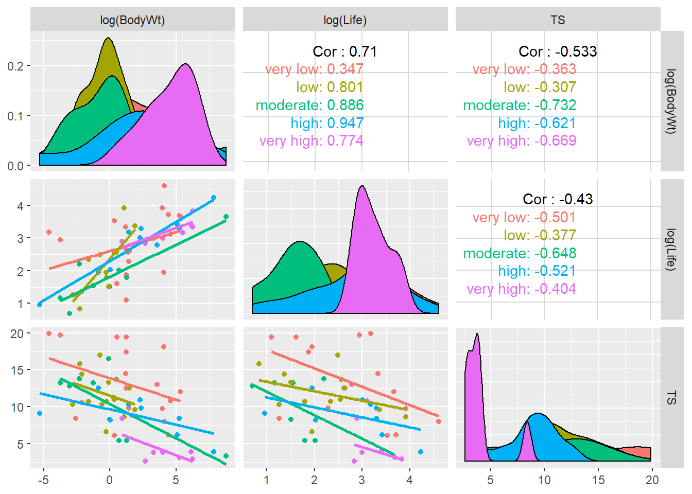
We fit the model, then use ANOVA (cause why not) instead of a t-test to compare the model with Life to the model without:
> sleep.lm3 <- lm(TS ~ log(BodyWt)+danger + log(Life), data=sleep)
> anova(sleep.lm2, sleep.lm3) # reduced, full
## Error in anova.lmlist(object, ...): models were not all fitted to the same size of datasetThe error occurs because there are 4 additional cases that are missing values for Life. We can see this in the summary output and in the filtering command:
> summary(sleep.lm3)
##
## Call:
## lm(formula = TS ~ log(BodyWt) + danger + log(Life), data = sleep)
##
## Residuals:
## Min 1Q Median 3Q Max
## -8.3841 -1.5295 0.2586 1.6906 5.2957
##
## Coefficients:
## Estimate Std. Error t value Pr(>|t|)
## (Intercept) 16.9876 1.8716 9.077 6.63e-12 ***
## log(BodyWt) -0.4509 0.2066 -2.183 0.034082 *
## dangerlow -2.8939 1.2283 -2.356 0.022700 *
## dangermoderate -5.5467 1.4679 -3.779 0.000444 ***
## dangerhigh -4.1830 1.3249 -3.157 0.002781 **
## dangervery high -7.5354 1.4943 -5.043 7.28e-06 ***
## log(Life) -1.0948 0.6784 -1.614 0.113251
## ---
## Signif. codes: 0 '***' 0.001 '**' 0.01 '*' 0.05 '.' 0.1 ' ' 1
##
## Residual standard error: 3.207 on 47 degrees of freedom
## (8 observations deleted due to missingness)
## Multiple R-squared: 0.5878, Adjusted R-squared: 0.5351
## F-statistic: 11.17 on 6 and 47 DF, p-value: 1.033e-07
> sleep %>%
+ select(TS, BodyWt, danger, Life) %>%
+ filter(!complete.cases(.))
## TS BodyWt danger Life
## 1 16.5 0.920 moderate NA
## 2 10.3 0.550 low NA
## 3 NA 529.000 very high 28.0
## 4 NA 35.000 high 16.3
## 5 10.6 0.122 very low NA
## 6 11.2 1.350 moderate NA
## 7 NA 250.000 very high 23.6
## 8 NA 4.050 very low 13.0We need to make sure that any ANOVA model comparisons are done using the same cases in the data set. To do this, create a version of the data that only contains complete cases for all four variables using the tidyr function drop_na:
> library(tidyr)
> sleep.noNA <- drop_na(sleep, TS, BodyWt, Life, danger)
> nrow(sleep)
## [1] 62
> nrow(sleep.noNA)
## [1] 54Using drop_na ensures us that only cases with NAs in the listed variables are removed from the data set. Now you can compare the two models:
> sleep.lm2.noNA <- lm(TS ~ log(BodyWt)+danger, data=sleep.noNA)
> sleep.lm3.noNA <- lm(TS ~ log(BodyWt)+danger + log(Life), data=sleep.noNA)
> anova(sleep.lm2.noNA, sleep.lm3.noNA)
## Analysis of Variance Table
##
## Model 1: TS ~ log(BodyWt) + danger
## Model 2: TS ~ log(BodyWt) + danger + log(Life)
## Res.Df RSS Df Sum of Sq F Pr(>F)
## 1 48 510.27
## 2 47 483.48 1 26.793 2.6046 0.1133More on missing data: R’s default na.action for the lm command is to omit NA cases from the data before fitting the model. Any action done on the lm, like getting residuals, returns values only for the complete cases. For example, the regression of total sleep on body weight and danger using the complete data set will give 58 residual and fitted values because there are only 58 complete cases.
> nrow(sleep) # 62 cases in the data
## [1] 62
> length(resid(sleep.lm2))
## [1] 58
> library(broom)
> sleep.lm2.aug <- augment(sleep.lm2) # danger + bodywt
> nrow(sleep.lm2.aug) # only 58 residuals and fitted values (62-4)
## [1] 58If we change the na.action argument in the lm to exclude the NA cases during the model fit, then they won’t be use in the model estimation but they will be preserved in the model attributes like the residuals. Here those cases are given NA values in the residual vector:
> sleep.lm2.exclude <- lm(TS ~ log(BodyWt) + danger, data=sleep, na.action=na.exclude)
> length(resid(sleep.lm2.exclude))
## [1] 62
> resid(sleep.lm2.exclude)
## 1 2 3 4 5 6
## -1.5149212 -2.0489364 -0.6659516 6.0986456 -1.2487150 1.2021519
## 7 8 9 10 11 12
## 3.3960550 -0.6885106 1.3180609 -1.7466097 1.8830495 1.1231940
## 13 14 15 16 17 18
## -1.5796181 -0.2491280 -7.1608811 -2.2131403 -0.9559651 -1.8155640
## 19 20 21 22 23 24
## -7.6165033 6.7414197 NA -0.7508961 1.5633040 1.4199273
## 25 26 27 28 29 30
## -4.9396162 1.3260241 2.0097921 -1.8543773 0.1946797 -0.2374482
## 31 32 33 34 35 36
## NA -4.3098363 3.0724442 -3.3379668 -4.6550207 1.0397253
## 37 38 39 40 41 42
## 0.4796206 0.5421249 5.8010790 4.2550511 NA 5.0348020
## 43 44 45 46 47 48
## 2.2684934 2.4994925 1.6261064 2.3380130 1.9114196 2.0508100
## 49 50 51 52 53 54
## -3.2251148 -0.6987071 -5.0846383 -4.1436735 -2.3427576 -0.3131049
## 55 56 57 58 59 60
## -0.2922619 -2.9724451 1.7299787 -4.5131873 2.8733432 1.1216380
## 61 62
## 6.2550511 NAThe augment function gives you a warning that it doesn’t include these missing value cases when it creates the augmented data set with residuals and fitted values. Here we still get a 58 cases augmented data frame:
> sleep.lm2.exclude.aug <- augment(sleep.lm2.exclude) # danger + bodywt
> nrow(sleep.lm2.exclude.aug) # only 58 residuals and fitted values (62-4)
## [1] 58Add the data=sleep argument to preserve the length of the original sleep data frame (62 cases) but to put NA values in for .fitted and .resid values since these cases were not used to fit the model.
> sleep.lm2.exclude.aug <- augment(sleep.lm2.exclude, data=sleep) # danger + bodywt
> nrow(sleep.lm2.exclude.aug) # all 62 cases
## [1] 62
> sleep.lm2.exclude.aug %>% # but no resid/fitted provided for missing cases
+ filter(is.na(.resid))
## # A tibble: 4 x 19
## SWS PS TS BodyWt BrainWt Life GP P SE D Species
## <dbl> <dbl> <dbl> <dbl> <dbl> <dbl> <dbl> <int> <int> <int> <fct>
## 1 NA 0.3 NA 529 680 28 400 5 5 5 Giraffe
## 2 NA NA NA 35 56 16.3 33 3 5 4 Kangar~
## 3 NA 1 NA 250 490 23.6 440 5 5 5 Okapi
## 4 NA NA NA 4.05 17 13 38 3 1 1 Yellow~
## # ... with 8 more variables: danger <fct>, .fitted <dbl>, .se.fit <dbl>,
## # .resid <dbl>, .hat <dbl>, .sigma <dbl>, .cooksd <dbl>,
## # .std.resid <dbl>3.7 Model Checking
After fitting a potential MLR model to a data set, we use residuals to help diagnosis any issues in the “fit” of our model. I.e. are any of our MLR model assumptions violated. We can also use residuals, along with a other measures, to determine if there are any cases that could be influencing our model fit.
Timing: You should always check model fit and outliers affects before any model testing or interpretation! Even though this section is after all our inference sections, you need to make sure your choice of model doesn’t violate our model assumptions. Using an ill-fitting model to determine which predictors are “statistically significant” or how they change the mean function is irrelevant if the model is not correctly specificied, or if an outlier or two is seriously influencing the model fit.
We will use the same methods as SLR to check the model assumptions of independence (Section 2.8.4) and normality of errors (Section 2.8.3) and when the model is robust (or not) against violations (Section 2.8.5
3.7.1 Residual plots
Residual plots for MLR were first discussed in Section 3.3.3 and they are used to check the linearity and constant variance MLR model assumptions.
We typically look at \(p+1\) plots: residuals vs. \(\hat{y}_i\) and residuals vs. all \(p\) predictors. (Here, \(p\) tells us how many predictors are in the model, terms like interactions are not used to produce residual plots.)
Recall that plot(my.lm, which=1) gives the residuals vs. fitted values. For the regression of total sleep on (log) body weight, life span and danger level (Section 3.6.4), the residual vs. fitted plot is:

If you don’t have a ton of data points, it is sometime nice to turn the smoother off since it is sensitive to areas in the plot with only a few data points:

One option for plotting residuals vs. all predictors is the function ggnostic from the GGally package:

Again, if we want to turn both the smoother and error ribbon off, you need to add the continuous argument shown below (just setting se=FALSE will remove the ribbon but keep the smoother):
> ggnostic(sleep.lm3, columnsY = ".resid",
+ continuous = list(.resid=wrap("nostic_resid", se=FALSE, method=NULL)))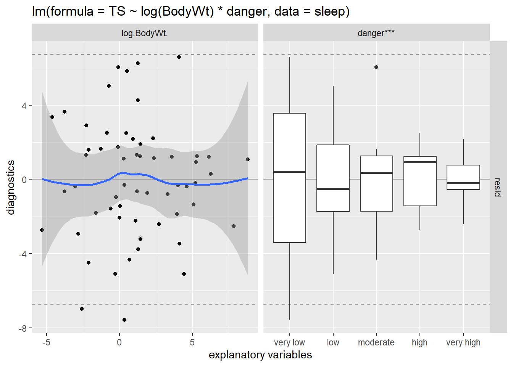
Conclusion: The mean function linearity assumptions seems to be adequately met, since the “middle” of each slice of points is roughly centered at 0. For the boxplot of residuals with danger level, we are looking for each boxplot to be roughly centered around 0 (holding a danger level constant for each boxplot). But there are some concerns about the constant variance assumption:
- for low fitted values (low predicted total sleep), we see less variation in residuals than for high fitted values.
- we see less variation in residuals for high levels of danger and high values of body weight and life span. Note that from EDA (above), we see that the association between these predictors and total sleep is negative, meaning these high values of predictors correspond to the low fitted values for predicted sleep.
At this stage, you should consider an alternative model version. To help “spread out” the lower sleep values we could try a log-transformation of TS:
> sleep.lm3a <- lm(log(TS) ~ log(BodyWt)+danger + log(Life), data=sleep)
> plot(sleep.lm3, which=1, add.smooth = FALSE)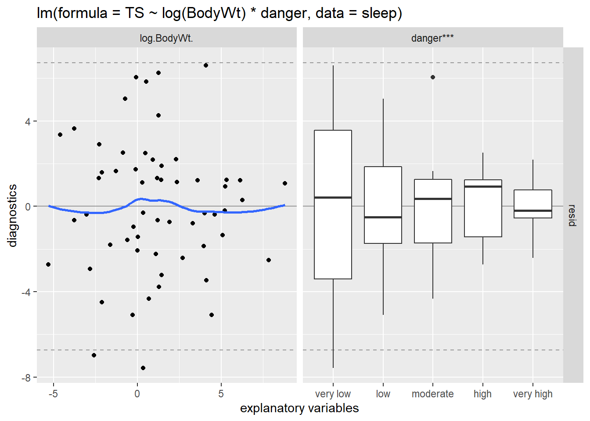
> ggnostic(sleep.lm3a, columnsY = ".resid",
+ continuous = list(.resid=wrap("nostic_resid", se=FALSE, method=NULL)))Overall, these residual plots look “better” than before. It looks like the model that best meets our MLR linearity and constant variance assumptions. The normality assumption is violated (see the QQ plot below), but with a little over 50 cases we should be able to trust inferences that involve the mean function (but not prediction intervals). Independence would only be violated if there were predator-prey relationships that would cause a correlation in total sleep among certain groups of species.
3.7.2 Outliers
When analyzing one variable, a case that is “far enough” from the mean or median of that variable’s distribution could be deemed “unusual” and called an outlier. In regression modeling, we need to broaden this notion of “unusual” or outlying cases because we have more than one variable involved. There are three common statistics used to measure the “unusualness” of a case: leverage, standardized residual, and Cook’s distance. These are all examples of case influence statistics.
3.7.2.1 Leverage
Leverage is a statistic that assesses how unusual a case’s predictor values are compared to average predictor values for all cases. This statistic doesn’t consider a case’s response at all.
For SLR, the leverage of case \(i\) equals \[ h_i = \dfrac{1}{n-1}\left(\dfrac{x_i - \bar{x}}{s_x}\right)^2 + \dfrac{1}{n} \] This basically measures how far \(x_i\) is from the mean predictor value, a larger deviation means higher leverage. In the plots below for a SLR model, we see an “outlier” in red in all three scatterplots of \(y\) vs. \(x\). But only when the red case has an extreme predictor value (along the \(x\)-axis) will it have high leverage (shown in the bottom plots). The first case will have a large residual but not a large leverage value.
In a MLR model, with more than one predictor, leverage \(h_i\) is computed in the same spirit as the SLR formula but using matrix algebra to measure how far a case’s predictor values are from the main “point cloud” of predictor values. Visualizing points with large leverage is harder because we are usually only using 2-dimensional graphs. The plots below show scatterplots for a regression with two predictors, \(x_1\) and \(x_2\). In all three cases the outlier point in red is a similar distance to the “middle” of the point cloud (shown by the green triangle). Because of this, all three cases have roughly the same leverage value (bottom graphs).
Mathematically:
- \(\dfrac{1}{n} \leq h_i < 1\)
- average leverage across all cases is \(\bar{h} = (p+1)/n\).
Guidelines for “large” leverage are based on the average leverage value:
- \(h_i > 2(p+1)/n\): potential for some influence
- \(h_i > 3(p+1)/n\): potential for large influence
Why care about leverage? A case with high leverage has the potential to be influential in the regression the fit of the regression line or surface. A regression line/surface could be pulled towards cases with high leverage. This is due to the fact that the SE of each observed residual \(r_i = y_i - \hat{y}_i\) is inversely related to leverage: \[ SE(r_i) = \hat{\sigma}\sqrt{1-h_i} \] This SE tells us how much variability we will see in case \(i\)’s residual when computing the residual for case \(i\) for many, many regression fits from many, many sample responses taken from a population with predictor values fixed. (Think back to the SLR simulation in Chapter 2.)
- A case with \(h_i \approx 1\), means that it’s residual has little variability and all possible regression lines/surfaces will result in \(\hat{y_i}\) being very close to \(Y_i\) (since the expected value of each residual is 0).
- If \(Y_i\) for case \(i\) is not following the “trend” of the other \(n-1\) cases, then this case will be very influential on where the estimated regression line/surface goes.
- A case with \(h_i \approx 1/n\), means that if \(n\) is large, it’s residual has variability of about \(\sigma\) and all possible regression lines/surfaces will result in \(\hat{y_i}\) that can vary widely from \(Y_i\).
3.7.2.2 Standardized (internally studentized) residuals
Standardized residuals, also known as internally studentized residuals, are the ratio of a residual to its SE: \[ studr_i = \dfrac{r_i}{SE(r_i)} = \dfrac{y_i - \hat{y}_i}{\hat{\sigma}\sqrt{1-h_i}} \]
The reasons for a case with a large standardized residual are
- a large \(r_i\) value (just poorly predicted) but “regular” leverage value. These cases will have typical predictor values but an unusual response.
- a “regular” \(r_i\) value but a small SE due to a large leverage value.
If our normality model assumption holds, then these standardized residuals should behave, roughly, like standard normal values (N(0,1)). Guidelines to flag unusual cases are
- \(| studr_i| > 2\) for smaller data sets
- \(| studr_i| > 4\) for large data sets
In the plots below we see
- Y outlier: This red case has a very large residual value \(r_i\) but it doesn’t have high leverage. The extremely high residual value leads to a large standardized residual value.
- X outlier: This red case has a large negative standardized residual due to its large residual value and small SE (due to large leverage, shown above).
- X and Y outlier: The left case doesn’t have an unusual standardized residual value because though it has large leverage (shown above), its residual is still small (because it follows the trend of the other cases). The right case has the same leverage as the left case, but this time it has a larger residual because it deviates a bit from the overall trend. For this reason, the right case has a larger standardized residual than the left case.
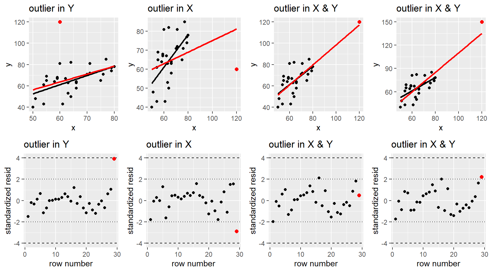
3.7.2.3 Cook’s distance
Cook’s distance, \(D_i\), is a measure of a case’s influence on the fitted regression line/surface. It is computed for case \(i\) by removing case \(i\) from the data, then fitting a regression model and predicting responses for all cases \(\hat{Y}_{j(-i)}\). These “remove \(i\)” predictions are compared to the predictions we get when including case \(i\), \(\hat{Y}_i\). If these two predictions deviate a lot, overall all cases, then we would say that case \(i\) is influential in the regression fit. \[ D_i = \sum_{j=1}^n \dfrac{(\hat{Y}_{j(-i)} - \hat{Y}_{j})^2}{(p+1)\hat{\sigma}^2} = \dfrac{studr_i}{p+1} \dfrac{h_i}{1-h_i} \] Note in the equation above shows that the measure of the “remove \(i\)” predictions from overall predictions can be expressed in terms of a cases’s leverage and standardized residual. A case can have high Cook’s distance if it has high standardized residual, high leverage, or a combination of both. A case should be flagged as likely influential if is has a Cook’s distance for 1 or larger.
In the plots below, the red regression line was fit including the red point and the black line was fit without the red point. A case where the red and black lines deviate a lot means that the red point in influential.
- Y outlier: This red case has a very large residual value \(r_i\) but it doesn’t have high leverage. It is not very influential.
- X outlier: This red case has a large negative standardized residual and large leverage, so it is very influential (\(D_i \approx 6\)).
- X and Y outlier: The left case doesn’t have an unusual standardized residual value though it has large leverage, so it isn’t very influential because it follows the trend of the other cases. The right case has the same leverage as the left case, but this time it has a larger standardized residual than the left case and it is deemed to be influential (\(D_i > 3\)).
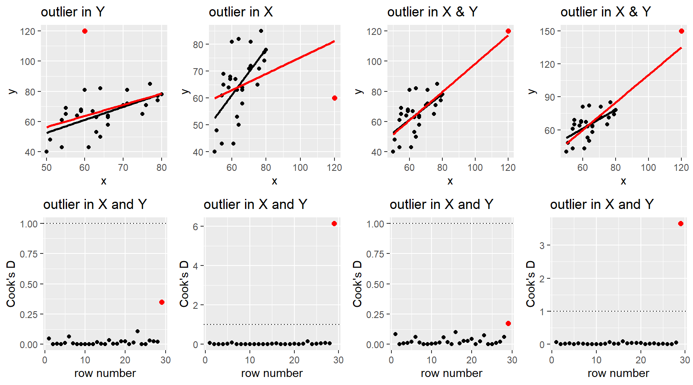
3.7.2.4 Example: Sleep
Consider the regression of log of total sleep on log-body weight, log-life span and danger level.
> library(tidyr)
> sleep.noNA <- drop_na(sleep, TS, BodyWt, Life, danger)
> sleep.lm3a <- lm(log(TS) ~ log(BodyWt)+danger + log(Life), data=sleep.noNA)
> sleep.lm3a
##
## Call:
## lm(formula = log(TS) ~ log(BodyWt) + danger + log(Life), data = sleep.noNA)
##
## Coefficients:
## (Intercept) log(BodyWt) dangerlow dangermoderate
## 2.87435 -0.05598 -0.23465 -0.56386
## dangerhigh dangervery high log(Life)
## -0.35383 -0.99515 -0.09913We can use the plot(my.lm, which = 4) command to plot Cook’s distance against row number. Adding id.n=5 will tell R to identify the row number of the 5 largest Cook’s distance cases. Note that this is just a tool for identifying cases, it doesn’t mean that they are influential cases if their values are all well below 1.

We can use the plot(my.lm, which = 5) command to plot standardized residuals (y-axis) against leverage (x-axis) with contours given by Cook’s distance. For this model fit, we have two cases (15, 19) with standardized residuals below -2 but these are mid-range leverage cases and all Cook’s distances are below 0.5. THe largest Cook’s distance case, 32, has the third largest leverage value.
The four cases that have the highest Cook’s distance are rows 15, 19, 32 and 46 in the original sleep data set! These are the (hidden) row names that are being used by the plot command to ID cases. So using the original data frame, sleep, we can ID these cases:
| Species | TS | BodyWt | Life |
|---|---|---|---|
| Eastern_American_mole | 8.4 | 0.075 | 3.5 |
| Genet | 6.1 | 1.410 | 34.0 |
| Lesser_short-tailed_shrew | 9.1 | 0.005 | 2.6 |
| Rabbit | 8.4 | 2.500 | 18.0 |
We can make the augmented data frame to see the case influence stat values for cases. When creating the augmented data frame, I enter the data set sleep.noNA that was used to fit the model sleep.lm3a. This command creates a column, .rownames, that contains the row numbers of the original sleep data frame. We can’t slice the augmented data frame because its row numbers done match those of the original data (54 cases vs. 62). So, instead, we can use filter to find the augmented data rows that have the .rownames of 15, 19, 32, and 46. We can see that these Cook’s distance values align with those shown in the Cook’s plot above.
> library(broom)
> sleep.noNA.aug <- augment(data=sleep.noNA, sleep.lm3a)
> nrow(sleep)
## [1] 62
> nrow(sleep.noNA.aug)
## [1] 54
> sleep.noNA.aug %>%
+ select(.rownames, Species, TS, BodyWt, Life, danger, .cooksd, .std.resid, .hat) %>%
+ filter(.rownames %in% c(15, 19, 32, 46)) %>%
+ arrange(desc(.cooksd)) # report in descending order according to cook's D
## # A tibble: 4 x 9
## .rownames Species TS BodyWt Life danger .cooksd .std.resid .hat
## <chr> <fct> <dbl> <dbl> <dbl> <fct> <dbl> <dbl> <dbl>
## 1 32 Lesser_shor~ 9.1 0.005 2.6 high 0.162 -1.87 0.246
## 2 15 Eastern_Ame~ 8.4 0.075 3.5 very ~ 0.133 -2.58 0.123
## 3 46 Rabbit 8.4 2.5 18 very ~ 0.121 2.03 0.170
## 4 19 Genet 6.1 1.41 34 very ~ 0.0902 -2.32 0.105The R package GGally also has plotting options for case influence stats, plotted against predictor variables. Reference lines for leverage (.hat) are average leverage and twice average leverage.

Here we remove the SE ribbon and smoother from the standardized residual plot.
> ggnostic(sleep.lm3a, columnsY = c(".std.resid", ".hat", ".cooksd"),
+ continuous = list(.std.resid=wrap("nostic_resid", se=FALSE, method=NULL)))We can use the GGally plots of case influence stats against predictors to help us understand the characteristics of cases that have concerning case influence stats. For example, the smallest body weight case, 0.005kg, corresponds to the high Cook’s distance value (Lesser short-tailed shrew).
> summary(sleep.noNA.aug %>% select(BodyWt, Life))
## BodyWt Life
## Min. : 0.005 Min. : 2.000
## 1st Qu.: 0.548 1st Qu.: 6.125
## Median : 3.342 Median : 13.850
## Mean : 213.037 Mean : 19.852
## 3rd Qu.: 48.203 3rd Qu.: 27.750
## Max. :6654.000 Max. :100.000This shrew has a higher leverage value, in part because it also has one of the smallest life spans of 2.6 (min life span is 2). The second smallest body weight species also has high leverage, but it doesn’t not have a high Cook’s distance. Why? The standardized residual plot shows that this second smallest body weight case has a standardized residual below 1. Meaning that while it has higher leverage, it’s response is not as far from the regression surface as the smallest body weight shrew. For the shrew, the combo of higher leverage and larger residual combine to give it the highest Cook’s distance value.
We can remove a case(s) from a lm fit by either creating a data frame without the case(s) or by using the subset command in the lm fit: lm(y ~ x, data = , subset = -c(row numbers)). This second option is quick and easy for comparing model fits with and without a case. Here we remove row 32 (Lesser short-tailed shrew) from the model fit:
> summary(sleep.lm3a)
##
## Call:
## lm(formula = log(TS) ~ log(BodyWt) + danger + log(Life), data = sleep.noNA)
##
## Residuals:
## Min 1Q Median 3Q Max
## -0.76693 -0.12239 0.05347 0.21708 0.58685
##
## Coefficients:
## Estimate Std. Error t value Pr(>|t|)
## (Intercept) 2.87435 0.18518 15.522 < 2e-16 ***
## log(BodyWt) -0.05598 0.02044 -2.739 0.008683 **
## dangerlow -0.23465 0.12154 -1.931 0.059565 .
## dangermoderate -0.56386 0.14524 -3.882 0.000322 ***
## dangerhigh -0.35383 0.13109 -2.699 0.009631 **
## dangervery high -0.99515 0.14785 -6.731 2.09e-08 ***
## log(Life) -0.09913 0.06712 -1.477 0.146359
## ---
## Signif. codes: 0 '***' 0.001 '**' 0.01 '*' 0.05 '.' 0.1 ' ' 1
##
## Residual standard error: 0.3173 on 47 degrees of freedom
## Multiple R-squared: 0.6872, Adjusted R-squared: 0.6473
## F-statistic: 17.21 on 6 and 47 DF, p-value: 2.105e-10
> # we must use original sleep data to remove the correct
> summary(lm(log(TS) ~ log(BodyWt) + danger + log(Life), data=sleep, subset = -32))
##
## Call:
## lm(formula = log(TS) ~ log(BodyWt) + danger + log(Life), data = sleep,
## subset = -32)
##
## Residuals:
## Min 1Q Median 3Q Max
## -0.82496 -0.11298 0.04157 0.18939 0.55285
##
## Coefficients:
## Estimate Std. Error t value Pr(>|t|)
## (Intercept) 2.92357 0.18194 16.069 < 2e-16 ***
## log(BodyWt) -0.06537 0.02048 -3.193 0.002542 **
## dangerlow -0.26021 0.11896 -2.187 0.033842 *
## dangermoderate -0.59004 0.14193 -4.157 0.000139 ***
## dangerhigh -0.27344 0.13422 -2.037 0.047408 *
## dangervery high -0.96593 0.14461 -6.679 2.76e-08 ***
## log(Life) -0.11153 0.06560 -1.700 0.095880 .
## ---
## Signif. codes: 0 '***' 0.001 '**' 0.01 '*' 0.05 '.' 0.1 ' ' 1
##
## Residual standard error: 0.3087 on 46 degrees of freedom
## (8 observations deleted due to missingness)
## Multiple R-squared: 0.7104, Adjusted R-squared: 0.6726
## F-statistic: 18.8 on 6 and 46 DF, p-value: 6.564e-11Note that the second model fit needed to be done with the sleep data and subset=-32 because the shrew is row 32 of the original data set:
> sleep %>% slice(32)
## SWS PS TS BodyWt BrainWt Life GP P SE D Species
## 1 7.7 1.4 9.1 0.005 0.14 2.6 21.5 5 2 4 Lesser_short-tailed_shrew
## danger
## 1 high
> sleep.noNA %>% slice(32) # wrong case!
## SWS PS TS BodyWt BrainWt Life GP P SE D Species danger
## 1 10.8 2 12.8 0.048 0.33 2 30 4 1 3 Musk_shrew moderateBut this second option of using subset in the lm command runs the risk of row number confusion when identifying cases in the usual residuals and case influence plots. For example, you can’t augment the sleep or sleep.noNA data frames when a case is removed from the lm using subset. If you plan to omit a case “for good”, the create a subsetted version of your data frame and use this to fit your lm.
If you want to create a “no NA” version of the data set that also excludes the lesser short-tailed shrew, go back and delete row 32 from the original data frame and then omit NA cases:
> sleep.noNA.noLSTShrew <- sleep %>% slice(-32) %>%
+ drop_na(TS, BodyWt, Life, danger)
> # refit with subsetted data
> sleep.lm3a.noLSTshrew <- lm(log(TS) ~ log(BodyWt) + danger + log(Life), data = sleep.noNA.noLSTShrew)Comparing the model inferences and fit with and without the lesser short-tailed shrew shows no major changes in our conclusions. For example, the danger variable is still statistically significant when body weight and life span are included. Life is marginally significant when body weight and danger level are included. We have a slight reduction in SSR when short-tailed shrew is excluded, which reduces SE’s a bit and increases \(R^2\), but this fact along should not justify the removal of this case. We can’t just cherry-pick cases to improve \(R^2\)!
So when can we consider excluding a case? Cases can be considered for removal if they change our inference conclusions. If this occurs, then consider:
- Is the case part of a different population compared to all other cases? If yes, then removal of the case is justified.
- If no, does the case have high leverage? If yes, describe how it is different in predictor value(s), remove the case and explain the new restricted predictor range for your model
- If no, then there is no clear path! Report results with and without the case and dig into the data and sampling process to try to understand what makes this case different.
- If no, does the case have high leverage? If yes, describe how it is different in predictor value(s), remove the case and explain the new restricted predictor range for your model